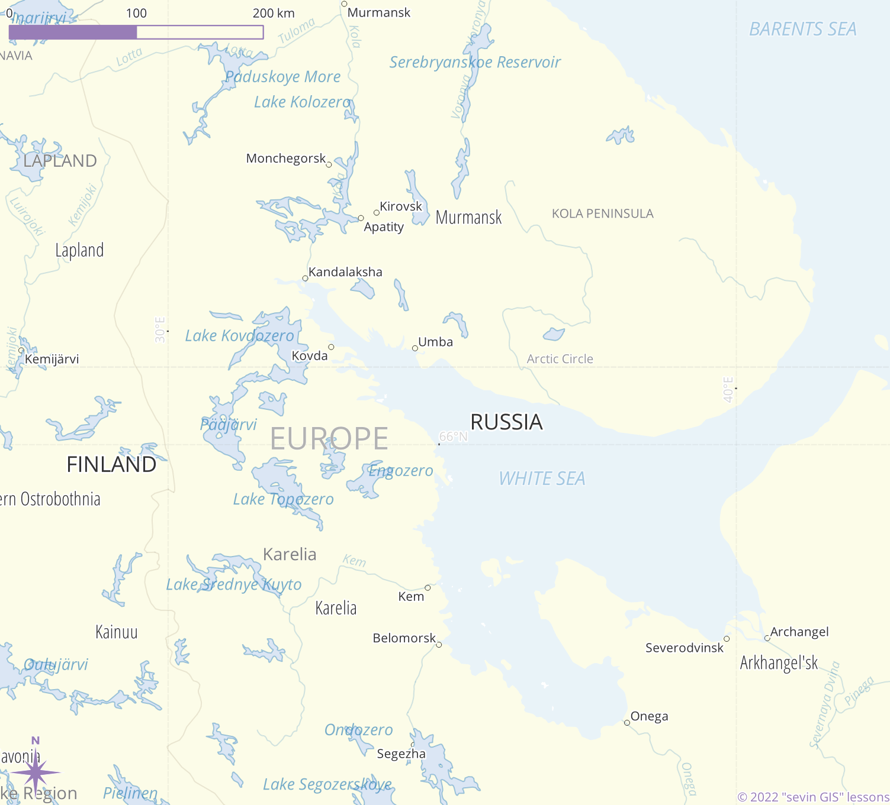
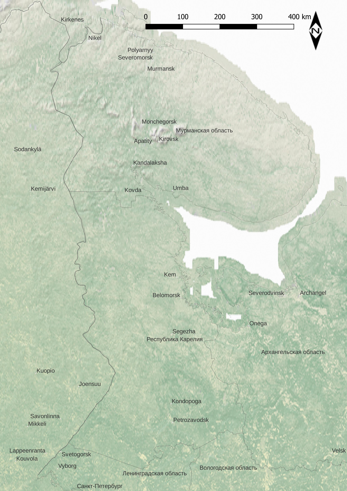
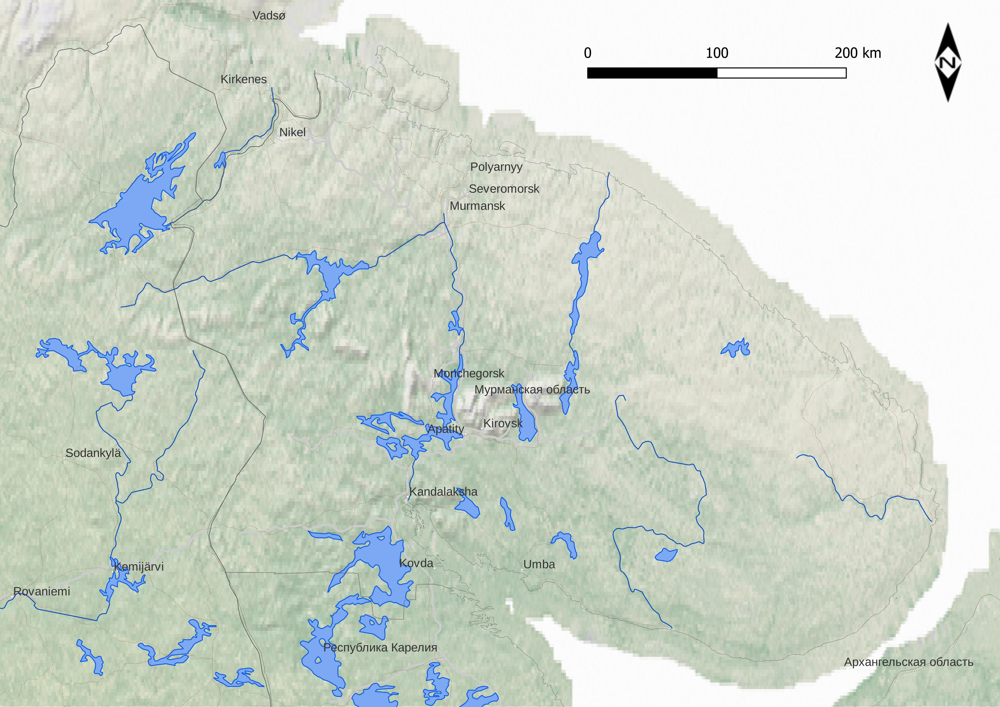
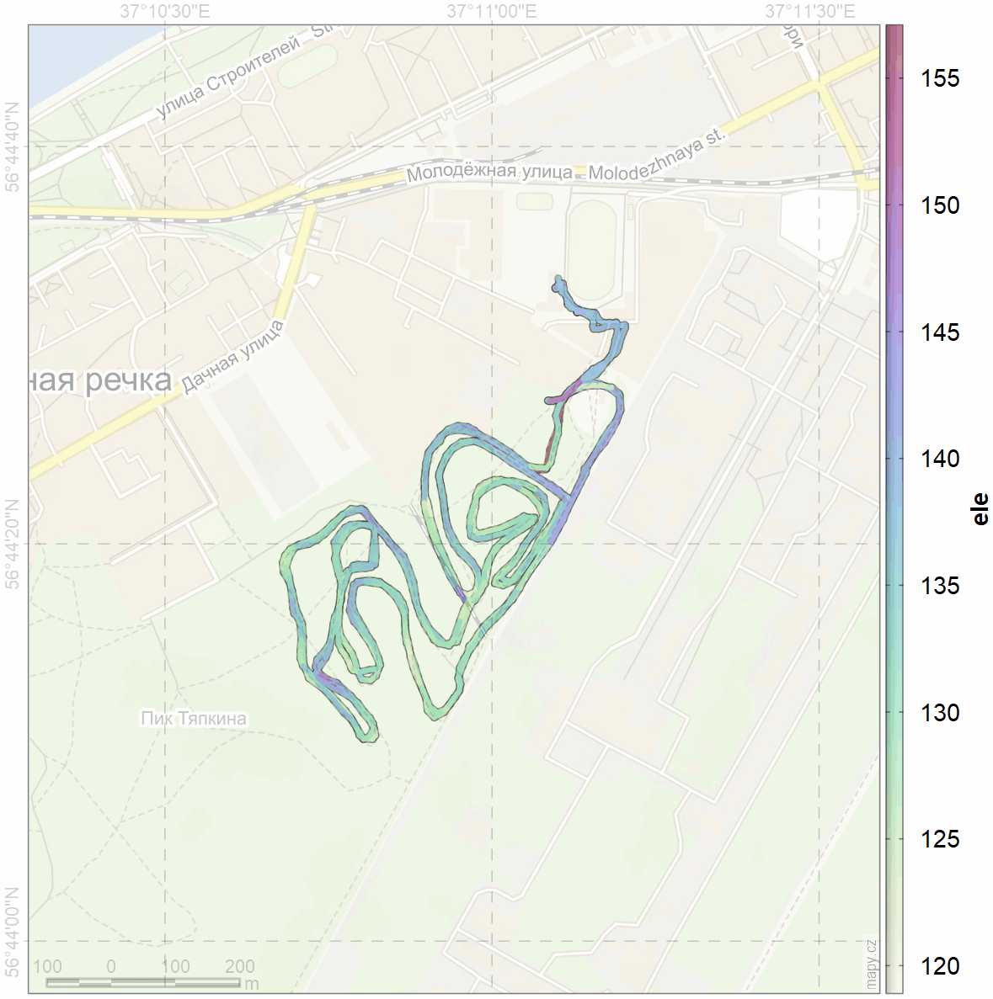
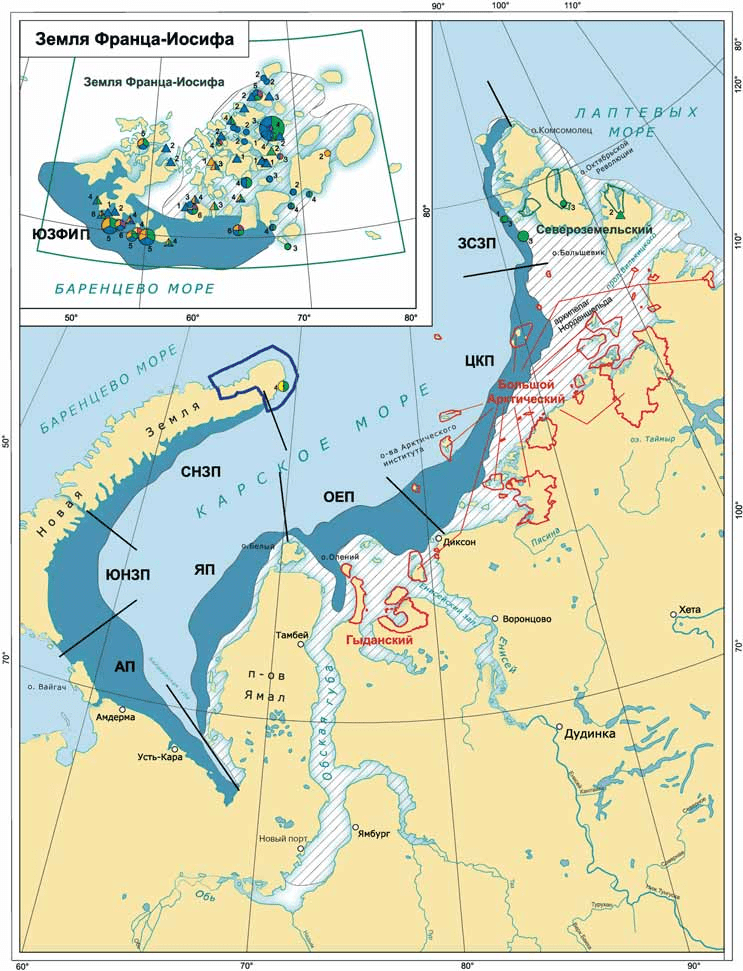

layout: true .banner[ .shorttitle[ [sevin GIS](https://nplatonov.github.io/sevinGIS/) ] ] --- class: metadata customtitle middle left name: H3216 <iframe width='220' height='220' class='timenow' src='https://www.timeanddate.com/worldclock/fullscreen.html?n=1440' frameborder='0' allow='encrypted-media' allowfullscreen></iframe> .sidebar.left-column[ ## [<svg aria-hidden="true" role="img" viewBox="0 0 576 512" style="height:1em;width:1.12em;vertical-align:-0.125em;margin-left:auto;margin-right:auto;font-size:inherit;fill:currentColor;overflow:visible;position:relative;"><path d="M96 32C60.7 32 32 60.7 32 96V384H96V96l384 0V384h64V96c0-35.3-28.7-64-64-64H96zM224 384v32H32c-17.7 0-32 14.3-32 32s14.3 32 32 32H544c17.7 0 32-14.3 32-32s-14.3-32-32-32H416V384c0-17.7-14.3-32-32-32H256c-17.7 0-32 14.3-32 32z"/></svg> Занятия](#H5dcc) ## [<svg aria-hidden="true" role="img" viewBox="0 0 576 512" style="height:1em;width:1.12em;vertical-align:-0.125em;margin-left:auto;margin-right:auto;font-size:inherit;fill:currentColor;overflow:visible;position:relative;"><path d="M575.8 255.5c0 18-15 32.1-32 32.1h-32l.7 160.2c.2 35.5-28.5 64.3-64 64.3H128.1c-35.3 0-64-28.7-64-64V287.6H32c-18 0-32-14-32-32.1c0-9 3-17 10-24L266.4 8c7-7 15-8 22-8s15 2 21 7L564.8 231.5c8 7 12 15 11 24zM352 224c0-35.3-28.7-64-64-64s-64 28.7-64 64s28.7 64 64 64s64-28.7 64-64zm-96 96c-44.2 0-80 35.8-80 80c0 8.8 7.2 16 16 16H384c8.8 0 16-7.2 16-16c0-44.2-35.8-80-80-80H256z"/></svg> Домашние задания](#Hcee0) ## [<svg aria-hidden="true" role="img" viewBox="0 0 640 512" style="height:1em;width:1.25em;vertical-align:-0.125em;margin-left:auto;margin-right:auto;font-size:inherit;fill:currentColor;overflow:visible;position:relative;"><path d="M352 128c0 70.7-57.3 128-128 128s-128-57.3-128-128S153.3 0 224 0s128 57.3 128 128zM0 482.3C0 383.8 79.8 304 178.3 304h91.4C368.2 304 448 383.8 448 482.3c0 16.4-13.3 29.7-29.7 29.7H29.7C13.3 512 0 498.7 0 482.3zM625 177L497 305c-9.4 9.4-24.6 9.4-33.9 0l-64-64c-9.4-9.4-9.4-24.6 0-33.9s24.6-9.4 33.9 0l47 47L591 143c9.4-9.4 24.6-9.4 33.9 0s9.4 24.6 0 33.9z"/></svg> Формальности](#H9ad2) ## [<svg aria-hidden="true" role="img" viewBox="0 0 640 512" style="height:1em;width:1.25em;vertical-align:-0.125em;margin-left:auto;margin-right:auto;font-size:inherit;fill:currentColor;overflow:visible;position:relative;"><path d="M144 160c-44.2 0-80-35.8-80-80S99.8 0 144 0s80 35.8 80 80s-35.8 80-80 80zm368 0c-44.2 0-80-35.8-80-80s35.8-80 80-80s80 35.8 80 80s-35.8 80-80 80zM0 298.7C0 239.8 47.8 192 106.7 192h42.7c15.9 0 31 3.5 44.6 9.7c-1.3 7.2-1.9 14.7-1.9 22.3c0 38.2 16.8 72.5 43.3 96c-.2 0-.4 0-.7 0H21.3C9.6 320 0 310.4 0 298.7zM405.3 320c-.2 0-.4 0-.7 0c26.6-23.5 43.3-57.8 43.3-96c0-7.6-.7-15-1.9-22.3c13.6-6.3 28.7-9.7 44.6-9.7h42.7C592.2 192 640 239.8 640 298.7c0 11.8-9.6 21.3-21.3 21.3H405.3zM416 224c0 53-43 96-96 96s-96-43-96-96s43-96 96-96s96 43 96 96zM128 485.3C128 411.7 187.7 352 261.3 352H378.7C452.3 352 512 411.7 512 485.3c0 14.7-11.9 26.7-26.7 26.7H154.7c-14.7 0-26.7-11.9-26.7-26.7z"/></svg> Интересы](#H3519) ] .mainbar.right-column[ .author[Никита Платонов] .institute[с.н.с. ИПЭЭ РАН] .title[ГИС технологии в биологических исследованиях] .subtitle[Календарь занятий и тематический план курса] .what[] .where[] .when[28 марта 2023 г.] ] --- name: H5dcc .sidebar.left-column[ ## [<svg aria-hidden="true" role="img" viewBox="0 0 576 512" style="height:1em;width:1.12em;vertical-align:-0.125em;margin-left:auto;margin-right:auto;font-size:inherit;fill:currentColor;overflow:visible;position:relative;"><path d="M96 32C60.7 32 32 60.7 32 96V384H96V96l384 0V384h64V96c0-35.3-28.7-64-64-64H96zM224 384v32H32c-17.7 0-32 14.3-32 32s14.3 32 32 32H544c17.7 0 32-14.3 32-32s-14.3-32-32-32H416V384c0-17.7-14.3-32-32-32H256c-17.7 0-32 14.3-32 32z"/></svg> Занятия](#H5dcc).fg[] ### [<svg aria-hidden="true" role="img" viewBox="0 0 448 512" style="height:1em;width:0.88em;vertical-align:-0.125em;margin-left:auto;margin-right:auto;font-size:inherit;fill:currentColor;overflow:visible;position:relative;"><path d="M152 64H296V24C296 10.75 306.7 0 320 0C333.3 0 344 10.75 344 24V64H384C419.3 64 448 92.65 448 128V448C448 483.3 419.3 512 384 512H64C28.65 512 0 483.3 0 448V128C0 92.65 28.65 64 64 64H104V24C104 10.75 114.7 0 128 0C141.3 0 152 10.75 152 24V64zM48 448C48 456.8 55.16 464 64 464H384C392.8 464 400 456.8 400 448V192H48V448z"/></svg> По датам](#H5dcc).fg[].bg[] ### [<svg aria-hidden="true" role="img" viewBox="0 0 448 512" style="height:1em;width:0.88em;vertical-align:-0.125em;margin-left:auto;margin-right:auto;font-size:inherit;fill:currentColor;overflow:visible;position:relative;"><path d="M96 151.4V360.6c9.7 5.6 17.8 13.7 23.4 23.4H328.6c0-.1 .1-.2 .1-.3l-4.5-7.9-32-56 0 0c-1.4 .1-2.8 .1-4.2 .1c-35.3 0-64-28.7-64-64s28.7-64 64-64c1.4 0 2.8 0 4.2 .1l0 0 32-56 4.5-7.9-.1-.3H119.4c-5.6 9.7-13.7 17.8-23.4 23.4zM384.3 352c35.2 .2 63.7 28.7 63.7 64c0 35.3-28.7 64-64 64c-23.7 0-44.4-12.9-55.4-32H119.4c-11.1 19.1-31.7 32-55.4 32c-35.3 0-64-28.7-64-64c0-23.7 12.9-44.4 32-55.4V151.4C12.9 140.4 0 119.7 0 96C0 60.7 28.7 32 64 32c23.7 0 44.4 12.9 55.4 32H328.6c11.1-19.1 31.7-32 55.4-32c35.3 0 64 28.7 64 64c0 35.3-28.5 63.8-63.7 64l-4.5 7.9-32 56-2.3 4c4.2 8.5 6.5 18 6.5 28.1s-2.3 19.6-6.5 28.1l2.3 4 32 56 4.5 7.9z"/></svg> По темам](#home) ## [<svg aria-hidden="true" role="img" viewBox="0 0 576 512" style="height:1em;width:1.12em;vertical-align:-0.125em;margin-left:auto;margin-right:auto;font-size:inherit;fill:currentColor;overflow:visible;position:relative;"><path d="M575.8 255.5c0 18-15 32.1-32 32.1h-32l.7 160.2c.2 35.5-28.5 64.3-64 64.3H128.1c-35.3 0-64-28.7-64-64V287.6H32c-18 0-32-14-32-32.1c0-9 3-17 10-24L266.4 8c7-7 15-8 22-8s15 2 21 7L564.8 231.5c8 7 12 15 11 24zM352 224c0-35.3-28.7-64-64-64s-64 28.7-64 64s28.7 64 64 64s64-28.7 64-64zm-96 96c-44.2 0-80 35.8-80 80c0 8.8 7.2 16 16 16H384c8.8 0 16-7.2 16-16c0-44.2-35.8-80-80-80H256z"/></svg> Домашние задания](#Hcee0) ## [<svg aria-hidden="true" role="img" viewBox="0 0 640 512" style="height:1em;width:1.25em;vertical-align:-0.125em;margin-left:auto;margin-right:auto;font-size:inherit;fill:currentColor;overflow:visible;position:relative;"><path d="M352 128c0 70.7-57.3 128-128 128s-128-57.3-128-128S153.3 0 224 0s128 57.3 128 128zM0 482.3C0 383.8 79.8 304 178.3 304h91.4C368.2 304 448 383.8 448 482.3c0 16.4-13.3 29.7-29.7 29.7H29.7C13.3 512 0 498.7 0 482.3zM625 177L497 305c-9.4 9.4-24.6 9.4-33.9 0l-64-64c-9.4-9.4-9.4-24.6 0-33.9s24.6-9.4 33.9 0l47 47L591 143c9.4-9.4 24.6-9.4 33.9 0s9.4 24.6 0 33.9z"/></svg> Формальности](#H9ad2) ## [<svg aria-hidden="true" role="img" viewBox="0 0 640 512" style="height:1em;width:1.25em;vertical-align:-0.125em;margin-left:auto;margin-right:auto;font-size:inherit;fill:currentColor;overflow:visible;position:relative;"><path d="M144 160c-44.2 0-80-35.8-80-80S99.8 0 144 0s80 35.8 80 80s-35.8 80-80 80zm368 0c-44.2 0-80-35.8-80-80s35.8-80 80-80s80 35.8 80 80s-35.8 80-80 80zM0 298.7C0 239.8 47.8 192 106.7 192h42.7c15.9 0 31 3.5 44.6 9.7c-1.3 7.2-1.9 14.7-1.9 22.3c0 38.2 16.8 72.5 43.3 96c-.2 0-.4 0-.7 0H21.3C9.6 320 0 310.4 0 298.7zM405.3 320c-.2 0-.4 0-.7 0c26.6-23.5 43.3-57.8 43.3-96c0-7.6-.7-15-1.9-22.3c13.6-6.3 28.7-9.7 44.6-9.7h42.7C592.2 192 640 239.8 640 298.7c0 11.8-9.6 21.3-21.3 21.3H405.3zM416 224c0 53-43 96-96 96s-96-43-96-96s43-96 96-96s96 43 96 96zM128 485.3C128 411.7 187.7 352 261.3 352H378.7C452.3 352 512 411.7 512 485.3c0 14.7-11.9 26.7-26.7 26.7H154.7c-14.7 0-26.7-11.9-26.7-26.7z"/></svg> Интересы](#H3519) ] .mainbar.right-column[ .pulling[ .font90.pull-left[ #### 02 марта [<svg aria-hidden="true" role="img" viewBox="0 0 384 512" style="height:1em;width:0.75em;vertical-align:-0.125em;margin-left:auto;margin-right:auto;font-size:inherit;fill:currentColor;overflow:visible;position:relative;"><path d="M365.3 93.38l-74.63-74.64C278.6 6.742 262.3 0 245.4 0H64C28.65 0 0 28.65 0 64l.0065 384c0 35.34 28.65 64 64 64H320c35.2 0 64-28.8 64-64V138.6C384 121.7 377.3 105.4 365.3 93.38zM336 448c0 8.836-7.164 16-16 16H64.02c-8.838 0-16-7.164-16-16L48 64.13c0-8.836 7.164-16 16-16h160L224 128c0 17.67 14.33 32 32 32h79.1V448zM240 288c0-17.67-14.33-32-32-32h-96c-17.67 0-32 14.33-32 32v96c0 17.67 14.33 32 32 32h96c17.67 0 32-14.33 32-32v-16.52l43.84 30.2C292.3 403.5 304 397.6 304 387.4V284.6c0-10.16-11.64-16.16-20.16-10.32L240 304.5V288z"/></svg>](https://us02web.zoom.us/rec/share/3wXQ2jVOWzYAkQSSHL0vdYIEIaXtz5Z95be0j6vwlFB9XjX3q6hiKTfAhh2dp33o.mMfy4jlECJ1fQ0oS?startTime=1677765747000)<span style="opacity: 0;">xkq2U?$W</span> | | | |:--|:-----------------------| |01 |Общие вопросы, введение | #### 09 марта [<svg aria-hidden="true" role="img" viewBox="0 0 384 512" style="height:1em;width:0.75em;vertical-align:-0.125em;margin-left:auto;margin-right:auto;font-size:inherit;fill:currentColor;overflow:visible;position:relative;"><path d="M365.3 93.38l-74.63-74.64C278.6 6.742 262.3 0 245.4 0H64C28.65 0 0 28.65 0 64l.0065 384c0 35.34 28.65 64 64 64H320c35.2 0 64-28.8 64-64V138.6C384 121.7 377.3 105.4 365.3 93.38zM336 448c0 8.836-7.164 16-16 16H64.02c-8.838 0-16-7.164-16-16L48 64.13c0-8.836 7.164-16 16-16h160L224 128c0 17.67 14.33 32 32 32h79.1V448zM240 288c0-17.67-14.33-32-32-32h-96c-17.67 0-32 14.33-32 32v96c0 17.67 14.33 32 32 32h96c17.67 0 32-14.33 32-32v-16.52l43.84 30.2C292.3 403.5 304 397.6 304 387.4V284.6c0-10.16-11.64-16.16-20.16-10.32L240 304.5V288z"/></svg>](https://us02web.zoom.us/rec/share/srWhIB5QNGk9Ns5IQXRRdoxIoNEpESAHUR8kH8TIvzIymOxsxurRWStdbQSS1us.EmZRwJsp13UMoTR1)<span style="opacity: 0;">8=?NBNJC</span> | | | |:--|:--------------------| |02 |[Начало работы с QGIS](class02.html)| #### 23 марта [<svg aria-hidden="true" role="img" viewBox="0 0 384 512" style="height:1em;width:0.75em;vertical-align:-0.125em;margin-left:auto;margin-right:auto;font-size:inherit;fill:currentColor;overflow:visible;position:relative;"><path d="M365.3 93.38l-74.63-74.64C278.6 6.742 262.3 0 245.4 0H64C28.65 0 0 28.65 0 64l.0065 384c0 35.34 28.65 64 64 64H320c35.2 0 64-28.8 64-64V138.6C384 121.7 377.3 105.4 365.3 93.38zM336 448c0 8.836-7.164 16-16 16H64.02c-8.838 0-16-7.164-16-16L48 64.13c0-8.836 7.164-16 16-16h160L224 128c0 17.67 14.33 32 32 32h79.1V448zM240 288c0-17.67-14.33-32-32-32h-96c-17.67 0-32 14.33-32 32v96c0 17.67 14.33 32 32 32h96c17.67 0 32-14.33 32-32v-16.52l43.84 30.2C292.3 403.5 304 397.6 304 387.4V284.6c0-10.16-11.64-16.16-20.16-10.32L240 304.5V288z"/></svg>](https://us02web.zoom.us/rec/share/2OFddnDHrA0I2t-ICIUfPeqd6Hww7Jd2SgB7Yolq296eRIqUdt0XvPzf0lpYPf8.dUn8bmdfGKn-lu_F)<span style="opacity: 0;">Yq^IKm+0</span> | | | |:--|:----------------------------------------------| |03 |[Основы работы с пространственными данными](class03.html)| |04 |[Пространственные данные: получение и обработка](class04.html)| |07 |[Вопросы и ответы](class07.html) | #### 30 марта | | | |:--|:----------------------------------------------------| |05 |[Возможности R для работы с пространственными данными](class05.html)| ] .font90.pull-right[ #### 06 апреля | | | |:--|:-----------------------------------------------------| |05 |[Возможности R для работы с пространственными данными](class05.html)| |06 |[Пространственные данные в качестве учебного материала](class06.html)| #### 13 апреля | | | |:--|:---------------------| |08 |[Операции с геометрией](class08.html)| #### 20 апреля | | | |:--|:--------------------| |09 |[Решения задач в QGIS](class09.html)| #### 27 апреля | | | |:--|:---------------------| |10 |[Моделирование ареалов](class10.html)| ] ] ] --- name: home .sidebar.left-column[ ## [<svg aria-hidden="true" role="img" viewBox="0 0 576 512" style="height:1em;width:1.12em;vertical-align:-0.125em;margin-left:auto;margin-right:auto;font-size:inherit;fill:currentColor;overflow:visible;position:relative;"><path d="M96 32C60.7 32 32 60.7 32 96V384H96V96l384 0V384h64V96c0-35.3-28.7-64-64-64H96zM224 384v32H32c-17.7 0-32 14.3-32 32s14.3 32 32 32H544c17.7 0 32-14.3 32-32s-14.3-32-32-32H416V384c0-17.7-14.3-32-32-32H256c-17.7 0-32 14.3-32 32z"/></svg> Занятия](#H5dcc).fg[] ### [<svg aria-hidden="true" role="img" viewBox="0 0 448 512" style="height:1em;width:0.88em;vertical-align:-0.125em;margin-left:auto;margin-right:auto;font-size:inherit;fill:currentColor;overflow:visible;position:relative;"><path d="M152 64H296V24C296 10.75 306.7 0 320 0C333.3 0 344 10.75 344 24V64H384C419.3 64 448 92.65 448 128V448C448 483.3 419.3 512 384 512H64C28.65 512 0 483.3 0 448V128C0 92.65 28.65 64 64 64H104V24C104 10.75 114.7 0 128 0C141.3 0 152 10.75 152 24V64zM48 448C48 456.8 55.16 464 64 464H384C392.8 464 400 456.8 400 448V192H48V448z"/></svg> По датам](#H5dcc) ### [<svg aria-hidden="true" role="img" viewBox="0 0 448 512" style="height:1em;width:0.88em;vertical-align:-0.125em;margin-left:auto;margin-right:auto;font-size:inherit;fill:currentColor;overflow:visible;position:relative;"><path d="M96 151.4V360.6c9.7 5.6 17.8 13.7 23.4 23.4H328.6c0-.1 .1-.2 .1-.3l-4.5-7.9-32-56 0 0c-1.4 .1-2.8 .1-4.2 .1c-35.3 0-64-28.7-64-64s28.7-64 64-64c1.4 0 2.8 0 4.2 .1l0 0 32-56 4.5-7.9-.1-.3H119.4c-5.6 9.7-13.7 17.8-23.4 23.4zM384.3 352c35.2 .2 63.7 28.7 63.7 64c0 35.3-28.7 64-64 64c-23.7 0-44.4-12.9-55.4-32H119.4c-11.1 19.1-31.7 32-55.4 32c-35.3 0-64-28.7-64-64c0-23.7 12.9-44.4 32-55.4V151.4C12.9 140.4 0 119.7 0 96C0 60.7 28.7 32 64 32c23.7 0 44.4 12.9 55.4 32H328.6c11.1-19.1 31.7-32 55.4-32c35.3 0 64 28.7 64 64c0 35.3-28.5 63.8-63.7 64l-4.5 7.9-32 56-2.3 4c4.2 8.5 6.5 18 6.5 28.1s-2.3 19.6-6.5 28.1l2.3 4 32 56 4.5 7.9z"/></svg> По темам](#home).fg[].bg[] ## [<svg aria-hidden="true" role="img" viewBox="0 0 576 512" style="height:1em;width:1.12em;vertical-align:-0.125em;margin-left:auto;margin-right:auto;font-size:inherit;fill:currentColor;overflow:visible;position:relative;"><path d="M575.8 255.5c0 18-15 32.1-32 32.1h-32l.7 160.2c.2 35.5-28.5 64.3-64 64.3H128.1c-35.3 0-64-28.7-64-64V287.6H32c-18 0-32-14-32-32.1c0-9 3-17 10-24L266.4 8c7-7 15-8 22-8s15 2 21 7L564.8 231.5c8 7 12 15 11 24zM352 224c0-35.3-28.7-64-64-64s-64 28.7-64 64s28.7 64 64 64s64-28.7 64-64zm-96 96c-44.2 0-80 35.8-80 80c0 8.8 7.2 16 16 16H384c8.8 0 16-7.2 16-16c0-44.2-35.8-80-80-80H256z"/></svg> Домашние задания](#Hcee0) ## [<svg aria-hidden="true" role="img" viewBox="0 0 640 512" style="height:1em;width:1.25em;vertical-align:-0.125em;margin-left:auto;margin-right:auto;font-size:inherit;fill:currentColor;overflow:visible;position:relative;"><path d="M352 128c0 70.7-57.3 128-128 128s-128-57.3-128-128S153.3 0 224 0s128 57.3 128 128zM0 482.3C0 383.8 79.8 304 178.3 304h91.4C368.2 304 448 383.8 448 482.3c0 16.4-13.3 29.7-29.7 29.7H29.7C13.3 512 0 498.7 0 482.3zM625 177L497 305c-9.4 9.4-24.6 9.4-33.9 0l-64-64c-9.4-9.4-9.4-24.6 0-33.9s24.6-9.4 33.9 0l47 47L591 143c9.4-9.4 24.6-9.4 33.9 0s9.4 24.6 0 33.9z"/></svg> Формальности](#H9ad2) ## [<svg aria-hidden="true" role="img" viewBox="0 0 640 512" style="height:1em;width:1.25em;vertical-align:-0.125em;margin-left:auto;margin-right:auto;font-size:inherit;fill:currentColor;overflow:visible;position:relative;"><path d="M144 160c-44.2 0-80-35.8-80-80S99.8 0 144 0s80 35.8 80 80s-35.8 80-80 80zm368 0c-44.2 0-80-35.8-80-80s35.8-80 80-80s80 35.8 80 80s-35.8 80-80 80zM0 298.7C0 239.8 47.8 192 106.7 192h42.7c15.9 0 31 3.5 44.6 9.7c-1.3 7.2-1.9 14.7-1.9 22.3c0 38.2 16.8 72.5 43.3 96c-.2 0-.4 0-.7 0H21.3C9.6 320 0 310.4 0 298.7zM405.3 320c-.2 0-.4 0-.7 0c26.6-23.5 43.3-57.8 43.3-96c0-7.6-.7-15-1.9-22.3c13.6-6.3 28.7-9.7 44.6-9.7h42.7C592.2 192 640 239.8 640 298.7c0 11.8-9.6 21.3-21.3 21.3H405.3zM416 224c0 53-43 96-96 96s-96-43-96-96s43-96 96-96s96 43 96 96zM128 485.3C128 411.7 187.7 352 261.3 352H378.7C452.3 352 512 411.7 512 485.3c0 14.7-11.9 26.7-26.7 26.7H154.7c-14.7 0-26.7-11.9-26.7-26.7z"/></svg> Интересы](#H3519) ] .mainbar.right-column[ |Занятие |Тема |Дата | |:-------|:-----------------------------------------------------|:----------------------------------| |01 |Общие вопросы, введение |02 марта | |02 |[Начало работы с QGIS](class02.html) |09 марта | |03 |[Основы работы с пространственными данными](class03.html)|23 марта | |04 |[Пространственные данные: получение и обработка](class04.html)|23 марта | |05 |[Возможности R для работы с пространственными данными](class05.html)|30 марта, 06 апреля | |06 |[Пространственные данные в качестве учебного материала](class06.html)|06 апреля | |07 |[Вопросы и ответы](class07.html) |23 марта | |08 |[Операции с геометрией](class08.html) |13 апреля | |09 |[Решения задач в QGIS](class09.html) |20 апреля | |10 |[Моделирование ареалов](class10.html) |27 апреля | <!-- <sup>Данные по таблицам будут пополняться по мере подготовки материала занятий</sup> --> .pagebreak[ ] ] --- name: Hcee0 .sidebar.left-column[ ## [<svg aria-hidden="true" role="img" viewBox="0 0 576 512" style="height:1em;width:1.12em;vertical-align:-0.125em;margin-left:auto;margin-right:auto;font-size:inherit;fill:currentColor;overflow:visible;position:relative;"><path d="M96 32C60.7 32 32 60.7 32 96V384H96V96l384 0V384h64V96c0-35.3-28.7-64-64-64H96zM224 384v32H32c-17.7 0-32 14.3-32 32s14.3 32 32 32H544c17.7 0 32-14.3 32-32s-14.3-32-32-32H416V384c0-17.7-14.3-32-32-32H256c-17.7 0-32 14.3-32 32z"/></svg> Занятия](#H5dcc) ## [<svg aria-hidden="true" role="img" viewBox="0 0 576 512" style="height:1em;width:1.12em;vertical-align:-0.125em;margin-left:auto;margin-right:auto;font-size:inherit;fill:currentColor;overflow:visible;position:relative;"><path d="M575.8 255.5c0 18-15 32.1-32 32.1h-32l.7 160.2c.2 35.5-28.5 64.3-64 64.3H128.1c-35.3 0-64-28.7-64-64V287.6H32c-18 0-32-14-32-32.1c0-9 3-17 10-24L266.4 8c7-7 15-8 22-8s15 2 21 7L564.8 231.5c8 7 12 15 11 24zM352 224c0-35.3-28.7-64-64-64s-64 28.7-64 64s28.7 64 64 64s64-28.7 64-64zm-96 96c-44.2 0-80 35.8-80 80c0 8.8 7.2 16 16 16H384c8.8 0 16-7.2 16-16c0-44.2-35.8-80-80-80H256z"/></svg> Домашние задания](#Hcee0).fg[] ### [К 30 марта](#Hcee0).fg[] #### [Оформление картоосновы](#Hcee0) <span class="bullet bullet-active">[•](#Hcee0)</span><span class="bullet mslide10m">[•](#Hc983)</span>.fg[].bg[] ##### [Людмила Бельдиман](#hwabb27abe) ### [К 13 апреля](#H33d9) ### [К 27 апреля](#H448d) ## [<svg aria-hidden="true" role="img" viewBox="0 0 640 512" style="height:1em;width:1.25em;vertical-align:-0.125em;margin-left:auto;margin-right:auto;font-size:inherit;fill:currentColor;overflow:visible;position:relative;"><path d="M352 128c0 70.7-57.3 128-128 128s-128-57.3-128-128S153.3 0 224 0s128 57.3 128 128zM0 482.3C0 383.8 79.8 304 178.3 304h91.4C368.2 304 448 383.8 448 482.3c0 16.4-13.3 29.7-29.7 29.7H29.7C13.3 512 0 498.7 0 482.3zM625 177L497 305c-9.4 9.4-24.6 9.4-33.9 0l-64-64c-9.4-9.4-9.4-24.6 0-33.9s24.6-9.4 33.9 0l47 47L591 143c9.4-9.4 24.6-9.4 33.9 0s9.4 24.6 0 33.9z"/></svg> Формальности](#H9ad2) ## [<svg aria-hidden="true" role="img" viewBox="0 0 640 512" style="height:1em;width:1.25em;vertical-align:-0.125em;margin-left:auto;margin-right:auto;font-size:inherit;fill:currentColor;overflow:visible;position:relative;"><path d="M144 160c-44.2 0-80-35.8-80-80S99.8 0 144 0s80 35.8 80 80s-35.8 80-80 80zm368 0c-44.2 0-80-35.8-80-80s35.8-80 80-80s80 35.8 80 80s-35.8 80-80 80zM0 298.7C0 239.8 47.8 192 106.7 192h42.7c15.9 0 31 3.5 44.6 9.7c-1.3 7.2-1.9 14.7-1.9 22.3c0 38.2 16.8 72.5 43.3 96c-.2 0-.4 0-.7 0H21.3C9.6 320 0 310.4 0 298.7zM405.3 320c-.2 0-.4 0-.7 0c26.6-23.5 43.3-57.8 43.3-96c0-7.6-.7-15-1.9-22.3c13.6-6.3 28.7-9.7 44.6-9.7h42.7C592.2 192 640 239.8 640 298.7c0 11.8-9.6 21.3-21.3 21.3H405.3zM416 224c0 53-43 96-96 96s-96-43-96-96s43-96 96-96s96 43 96 96zM128 485.3C128 411.7 187.7 352 261.3 352H378.7C452.3 352 512 411.7 512 485.3c0 14.7-11.9 26.7-26.7 26.7H154.7c-14.7 0-26.7-11.9-26.7-26.7z"/></svg> Интересы](#H3519) ] .mainbar.right-column[ .font75[ | | | :-|:-------------- Выдано| 23 марта Сдача| 30 марта Программное обеспечение| QGIS Цель| Научиться оперировать с инструментами QGIS для получения данных и оформления слоев проекта, включая стили оформления и подписи топонимов Задание| На основе данных Natural Earth 1:10m cоздать картооснову, ориентируясь на территорию, охватывающую Карелию и Мурманскую области. Желательно включить административные границы, батиметрию и контуры высот. Экспортировать через Export Image или Print Layout два изображения, соответствующих русскоязычным журнальным требованиям, с различным пространственным охватом: 1) только Кольский п-ов, 2) вместе Карелия и Мурманская обл. Отчетность| 1. PNG/TIFF/PDF с охватом Кольского полуострова<br>2. PNG/TIFF/PDF с охватом Карелии и Мурманской обл. Подсказки| Данные [Natural Earth World GIS Data](https://www.naturalearthdata.com/).<br>Посмотреть также OSM данные по [регионам России](https://download.geofabrik.de/russia.html) на сайте проекта [Geofabrik](https://www.geofabrik.de/) для крупномасштабных карт.<br>Обратить внимание на присутствие в атрибутивной таблице русскоязычных полей. ] ] --- name: Hc983 .sidebar.left-column[ ## [<svg aria-hidden="true" role="img" viewBox="0 0 576 512" style="height:1em;width:1.12em;vertical-align:-0.125em;margin-left:auto;margin-right:auto;font-size:inherit;fill:currentColor;overflow:visible;position:relative;"><path d="M96 32C60.7 32 32 60.7 32 96V384H96V96l384 0V384h64V96c0-35.3-28.7-64-64-64H96zM224 384v32H32c-17.7 0-32 14.3-32 32s14.3 32 32 32H544c17.7 0 32-14.3 32-32s-14.3-32-32-32H416V384c0-17.7-14.3-32-32-32H256c-17.7 0-32 14.3-32 32z"/></svg> Занятия](#H5dcc) ## [<svg aria-hidden="true" role="img" viewBox="0 0 576 512" style="height:1em;width:1.12em;vertical-align:-0.125em;margin-left:auto;margin-right:auto;font-size:inherit;fill:currentColor;overflow:visible;position:relative;"><path d="M575.8 255.5c0 18-15 32.1-32 32.1h-32l.7 160.2c.2 35.5-28.5 64.3-64 64.3H128.1c-35.3 0-64-28.7-64-64V287.6H32c-18 0-32-14-32-32.1c0-9 3-17 10-24L266.4 8c7-7 15-8 22-8s15 2 21 7L564.8 231.5c8 7 12 15 11 24zM352 224c0-35.3-28.7-64-64-64s-64 28.7-64 64s28.7 64 64 64s64-28.7 64-64zm-96 96c-44.2 0-80 35.8-80 80c0 8.8 7.2 16 16 16H384c8.8 0 16-7.2 16-16c0-44.2-35.8-80-80-80H256z"/></svg> Домашние задания](#Hcee0).fg[] ### [К 30 марта](#Hcee0).fg[] #### [Оформление картоосновы](#Hcee0) <span class="bullet bullet">[•](#Hcee0)</span><span class="bullet bullet-active">[•](#Hc983)</span>.fg[].bg[] ##### [Людмила Бельдиман](#hwabb27abe) ### [К 13 апреля](#H33d9) ### [К 27 апреля](#H448d) ## [<svg aria-hidden="true" role="img" viewBox="0 0 640 512" style="height:1em;width:1.25em;vertical-align:-0.125em;margin-left:auto;margin-right:auto;font-size:inherit;fill:currentColor;overflow:visible;position:relative;"><path d="M352 128c0 70.7-57.3 128-128 128s-128-57.3-128-128S153.3 0 224 0s128 57.3 128 128zM0 482.3C0 383.8 79.8 304 178.3 304h91.4C368.2 304 448 383.8 448 482.3c0 16.4-13.3 29.7-29.7 29.7H29.7C13.3 512 0 498.7 0 482.3zM625 177L497 305c-9.4 9.4-24.6 9.4-33.9 0l-64-64c-9.4-9.4-9.4-24.6 0-33.9s24.6-9.4 33.9 0l47 47L591 143c9.4-9.4 24.6-9.4 33.9 0s9.4 24.6 0 33.9z"/></svg> Формальности](#H9ad2) ## [<svg aria-hidden="true" role="img" viewBox="0 0 640 512" style="height:1em;width:1.25em;vertical-align:-0.125em;margin-left:auto;margin-right:auto;font-size:inherit;fill:currentColor;overflow:visible;position:relative;"><path d="M144 160c-44.2 0-80-35.8-80-80S99.8 0 144 0s80 35.8 80 80s-35.8 80-80 80zm368 0c-44.2 0-80-35.8-80-80s35.8-80 80-80s80 35.8 80 80s-35.8 80-80 80zM0 298.7C0 239.8 47.8 192 106.7 192h42.7c15.9 0 31 3.5 44.6 9.7c-1.3 7.2-1.9 14.7-1.9 22.3c0 38.2 16.8 72.5 43.3 96c-.2 0-.4 0-.7 0H21.3C9.6 320 0 310.4 0 298.7zM405.3 320c-.2 0-.4 0-.7 0c26.6-23.5 43.3-57.8 43.3-96c0-7.6-.7-15-1.9-22.3c13.6-6.3 28.7-9.7 44.6-9.7h42.7C592.2 192 640 239.8 640 298.7c0 11.8-9.6 21.3-21.3 21.3H405.3zM416 224c0 53-43 96-96 96s-96-43-96-96s43-96 96-96s96 43 96 96zM128 485.3C128 411.7 187.7 352 261.3 352H378.7C452.3 352 512 411.7 512 485.3c0 14.7-11.9 26.7-26.7 26.7H154.7c-14.7 0-26.7-11.9-26.7-26.7z"/></svg> Интересы](#H3519) ] .mainbar.right-column[  ] --- name: hwabb27abe .sidebar.left-column[ ## [<svg aria-hidden="true" role="img" viewBox="0 0 576 512" style="height:1em;width:1.12em;vertical-align:-0.125em;margin-left:auto;margin-right:auto;font-size:inherit;fill:currentColor;overflow:visible;position:relative;"><path d="M96 32C60.7 32 32 60.7 32 96V384H96V96l384 0V384h64V96c0-35.3-28.7-64-64-64H96zM224 384v32H32c-17.7 0-32 14.3-32 32s14.3 32 32 32H544c17.7 0 32-14.3 32-32s-14.3-32-32-32H416V384c0-17.7-14.3-32-32-32H256c-17.7 0-32 14.3-32 32z"/></svg> Занятия](#H5dcc) ## [<svg aria-hidden="true" role="img" viewBox="0 0 576 512" style="height:1em;width:1.12em;vertical-align:-0.125em;margin-left:auto;margin-right:auto;font-size:inherit;fill:currentColor;overflow:visible;position:relative;"><path d="M575.8 255.5c0 18-15 32.1-32 32.1h-32l.7 160.2c.2 35.5-28.5 64.3-64 64.3H128.1c-35.3 0-64-28.7-64-64V287.6H32c-18 0-32-14-32-32.1c0-9 3-17 10-24L266.4 8c7-7 15-8 22-8s15 2 21 7L564.8 231.5c8 7 12 15 11 24zM352 224c0-35.3-28.7-64-64-64s-64 28.7-64 64s28.7 64 64 64s64-28.7 64-64zm-96 96c-44.2 0-80 35.8-80 80c0 8.8 7.2 16 16 16H384c8.8 0 16-7.2 16-16c0-44.2-35.8-80-80-80H256z"/></svg> Домашние задания](#Hcee0).fg[] ### [К 30 марта](#Hcee0).fg[] #### [Оформление картоосновы](#Hcee0).fg[] ##### [Людмила Бельдиман](#hwabb27abe) <span class="bullet bullet-active">[•](#hwabb27abe)</span><span class="bullet mslide13m">[•](#H508a)</span>.fg[].bg[] ### [К 13 апреля](#H33d9) ### [К 27 апреля](#H448d) ## [<svg aria-hidden="true" role="img" viewBox="0 0 640 512" style="height:1em;width:1.25em;vertical-align:-0.125em;margin-left:auto;margin-right:auto;font-size:inherit;fill:currentColor;overflow:visible;position:relative;"><path d="M352 128c0 70.7-57.3 128-128 128s-128-57.3-128-128S153.3 0 224 0s128 57.3 128 128zM0 482.3C0 383.8 79.8 304 178.3 304h91.4C368.2 304 448 383.8 448 482.3c0 16.4-13.3 29.7-29.7 29.7H29.7C13.3 512 0 498.7 0 482.3zM625 177L497 305c-9.4 9.4-24.6 9.4-33.9 0l-64-64c-9.4-9.4-9.4-24.6 0-33.9s24.6-9.4 33.9 0l47 47L591 143c9.4-9.4 24.6-9.4 33.9 0s9.4 24.6 0 33.9z"/></svg> Формальности](#H9ad2) ## [<svg aria-hidden="true" role="img" viewBox="0 0 640 512" style="height:1em;width:1.25em;vertical-align:-0.125em;margin-left:auto;margin-right:auto;font-size:inherit;fill:currentColor;overflow:visible;position:relative;"><path d="M144 160c-44.2 0-80-35.8-80-80S99.8 0 144 0s80 35.8 80 80s-35.8 80-80 80zm368 0c-44.2 0-80-35.8-80-80s35.8-80 80-80s80 35.8 80 80s-35.8 80-80 80zM0 298.7C0 239.8 47.8 192 106.7 192h42.7c15.9 0 31 3.5 44.6 9.7c-1.3 7.2-1.9 14.7-1.9 22.3c0 38.2 16.8 72.5 43.3 96c-.2 0-.4 0-.7 0H21.3C9.6 320 0 310.4 0 298.7zM405.3 320c-.2 0-.4 0-.7 0c26.6-23.5 43.3-57.8 43.3-96c0-7.6-.7-15-1.9-22.3c13.6-6.3 28.7-9.7 44.6-9.7h42.7C592.2 192 640 239.8 640 298.7c0 11.8-9.6 21.3-21.3 21.3H405.3zM416 224c0 53-43 96-96 96s-96-43-96-96s43-96 96-96s96 43 96 96zM128 485.3C128 411.7 187.7 352 261.3 352H378.7C452.3 352 512 411.7 512 485.3c0 14.7-11.9 26.7-26.7 26.7H154.7c-14.7 0-26.7-11.9-26.7-26.7z"/></svg> Интересы](#H3519) ] .mainbar.right-column[  ] --- name: H508a .sidebar.left-column[ ## [<svg aria-hidden="true" role="img" viewBox="0 0 576 512" style="height:1em;width:1.12em;vertical-align:-0.125em;margin-left:auto;margin-right:auto;font-size:inherit;fill:currentColor;overflow:visible;position:relative;"><path d="M96 32C60.7 32 32 60.7 32 96V384H96V96l384 0V384h64V96c0-35.3-28.7-64-64-64H96zM224 384v32H32c-17.7 0-32 14.3-32 32s14.3 32 32 32H544c17.7 0 32-14.3 32-32s-14.3-32-32-32H416V384c0-17.7-14.3-32-32-32H256c-17.7 0-32 14.3-32 32z"/></svg> Занятия](#H5dcc) ## [<svg aria-hidden="true" role="img" viewBox="0 0 576 512" style="height:1em;width:1.12em;vertical-align:-0.125em;margin-left:auto;margin-right:auto;font-size:inherit;fill:currentColor;overflow:visible;position:relative;"><path d="M575.8 255.5c0 18-15 32.1-32 32.1h-32l.7 160.2c.2 35.5-28.5 64.3-64 64.3H128.1c-35.3 0-64-28.7-64-64V287.6H32c-18 0-32-14-32-32.1c0-9 3-17 10-24L266.4 8c7-7 15-8 22-8s15 2 21 7L564.8 231.5c8 7 12 15 11 24zM352 224c0-35.3-28.7-64-64-64s-64 28.7-64 64s28.7 64 64 64s64-28.7 64-64zm-96 96c-44.2 0-80 35.8-80 80c0 8.8 7.2 16 16 16H384c8.8 0 16-7.2 16-16c0-44.2-35.8-80-80-80H256z"/></svg> Домашние задания](#Hcee0).fg[] ### [К 30 марта](#Hcee0).fg[] #### [Оформление картоосновы](#Hcee0).fg[] ##### [Людмила Бельдиман](#hwabb27abe) <span class="bullet bullet">[•](#hwabb27abe)</span><span class="bullet bullet-active">[•](#H508a)</span>.fg[].bg[] ### [К 13 апреля](#H33d9) ### [К 27 апреля](#H448d) ## [<svg aria-hidden="true" role="img" viewBox="0 0 640 512" style="height:1em;width:1.25em;vertical-align:-0.125em;margin-left:auto;margin-right:auto;font-size:inherit;fill:currentColor;overflow:visible;position:relative;"><path d="M352 128c0 70.7-57.3 128-128 128s-128-57.3-128-128S153.3 0 224 0s128 57.3 128 128zM0 482.3C0 383.8 79.8 304 178.3 304h91.4C368.2 304 448 383.8 448 482.3c0 16.4-13.3 29.7-29.7 29.7H29.7C13.3 512 0 498.7 0 482.3zM625 177L497 305c-9.4 9.4-24.6 9.4-33.9 0l-64-64c-9.4-9.4-9.4-24.6 0-33.9s24.6-9.4 33.9 0l47 47L591 143c9.4-9.4 24.6-9.4 33.9 0s9.4 24.6 0 33.9z"/></svg> Формальности](#H9ad2) ## [<svg aria-hidden="true" role="img" viewBox="0 0 640 512" style="height:1em;width:1.25em;vertical-align:-0.125em;margin-left:auto;margin-right:auto;font-size:inherit;fill:currentColor;overflow:visible;position:relative;"><path d="M144 160c-44.2 0-80-35.8-80-80S99.8 0 144 0s80 35.8 80 80s-35.8 80-80 80zm368 0c-44.2 0-80-35.8-80-80s35.8-80 80-80s80 35.8 80 80s-35.8 80-80 80zM0 298.7C0 239.8 47.8 192 106.7 192h42.7c15.9 0 31 3.5 44.6 9.7c-1.3 7.2-1.9 14.7-1.9 22.3c0 38.2 16.8 72.5 43.3 96c-.2 0-.4 0-.7 0H21.3C9.6 320 0 310.4 0 298.7zM405.3 320c-.2 0-.4 0-.7 0c26.6-23.5 43.3-57.8 43.3-96c0-7.6-.7-15-1.9-22.3c13.6-6.3 28.7-9.7 44.6-9.7h42.7C592.2 192 640 239.8 640 298.7c0 11.8-9.6 21.3-21.3 21.3H405.3zM416 224c0 53-43 96-96 96s-96-43-96-96s43-96 96-96s96 43 96 96zM128 485.3C128 411.7 187.7 352 261.3 352H378.7C452.3 352 512 411.7 512 485.3c0 14.7-11.9 26.7-26.7 26.7H154.7c-14.7 0-26.7-11.9-26.7-26.7z"/></svg> Интересы](#H3519) ] .mainbar.right-column[  .pagebreak[ ] ] --- name: H33d9 .sidebar.left-column[ ## [<svg aria-hidden="true" role="img" viewBox="0 0 576 512" style="height:1em;width:1.12em;vertical-align:-0.125em;margin-left:auto;margin-right:auto;font-size:inherit;fill:currentColor;overflow:visible;position:relative;"><path d="M96 32C60.7 32 32 60.7 32 96V384H96V96l384 0V384h64V96c0-35.3-28.7-64-64-64H96zM224 384v32H32c-17.7 0-32 14.3-32 32s14.3 32 32 32H544c17.7 0 32-14.3 32-32s-14.3-32-32-32H416V384c0-17.7-14.3-32-32-32H256c-17.7 0-32 14.3-32 32z"/></svg> Занятия](#H5dcc) ## [<svg aria-hidden="true" role="img" viewBox="0 0 576 512" style="height:1em;width:1.12em;vertical-align:-0.125em;margin-left:auto;margin-right:auto;font-size:inherit;fill:currentColor;overflow:visible;position:relative;"><path d="M575.8 255.5c0 18-15 32.1-32 32.1h-32l.7 160.2c.2 35.5-28.5 64.3-64 64.3H128.1c-35.3 0-64-28.7-64-64V287.6H32c-18 0-32-14-32-32.1c0-9 3-17 10-24L266.4 8c7-7 15-8 22-8s15 2 21 7L564.8 231.5c8 7 12 15 11 24zM352 224c0-35.3-28.7-64-64-64s-64 28.7-64 64s28.7 64 64 64s64-28.7 64-64zm-96 96c-44.2 0-80 35.8-80 80c0 8.8 7.2 16 16 16H384c8.8 0 16-7.2 16-16c0-44.2-35.8-80-80-80H256z"/></svg> Домашние задания](#Hcee0).fg[] ### [К 30 марта](#Hcee0) ### [К 13 апреля](#H33d9).fg[] #### [Анализ траектории](#H33d9) <span class="bullet bullet-active">[•](#H33d9)</span><span class="bullet mslide16m">[•](#H20e0)</span>.fg[].bg[] ### [К 27 апреля](#H448d) ## [<svg aria-hidden="true" role="img" viewBox="0 0 640 512" style="height:1em;width:1.25em;vertical-align:-0.125em;margin-left:auto;margin-right:auto;font-size:inherit;fill:currentColor;overflow:visible;position:relative;"><path d="M352 128c0 70.7-57.3 128-128 128s-128-57.3-128-128S153.3 0 224 0s128 57.3 128 128zM0 482.3C0 383.8 79.8 304 178.3 304h91.4C368.2 304 448 383.8 448 482.3c0 16.4-13.3 29.7-29.7 29.7H29.7C13.3 512 0 498.7 0 482.3zM625 177L497 305c-9.4 9.4-24.6 9.4-33.9 0l-64-64c-9.4-9.4-9.4-24.6 0-33.9s24.6-9.4 33.9 0l47 47L591 143c9.4-9.4 24.6-9.4 33.9 0s9.4 24.6 0 33.9z"/></svg> Формальности](#H9ad2) ## [<svg aria-hidden="true" role="img" viewBox="0 0 640 512" style="height:1em;width:1.25em;vertical-align:-0.125em;margin-left:auto;margin-right:auto;font-size:inherit;fill:currentColor;overflow:visible;position:relative;"><path d="M144 160c-44.2 0-80-35.8-80-80S99.8 0 144 0s80 35.8 80 80s-35.8 80-80 80zm368 0c-44.2 0-80-35.8-80-80s35.8-80 80-80s80 35.8 80 80s-35.8 80-80 80zM0 298.7C0 239.8 47.8 192 106.7 192h42.7c15.9 0 31 3.5 44.6 9.7c-1.3 7.2-1.9 14.7-1.9 22.3c0 38.2 16.8 72.5 43.3 96c-.2 0-.4 0-.7 0H21.3C9.6 320 0 310.4 0 298.7zM405.3 320c-.2 0-.4 0-.7 0c26.6-23.5 43.3-57.8 43.3-96c0-7.6-.7-15-1.9-22.3c13.6-6.3 28.7-9.7 44.6-9.7h42.7C592.2 192 640 239.8 640 298.7c0 11.8-9.6 21.3-21.3 21.3H405.3zM416 224c0 53-43 96-96 96s-96-43-96-96s43-96 96-96s96 43 96 96zM128 485.3C128 411.7 187.7 352 261.3 352H378.7C452.3 352 512 411.7 512 485.3c0 14.7-11.9 26.7-26.7 26.7H154.7c-14.7 0-26.7-11.9-26.7-26.7z"/></svg> Интересы](#H3519) ] .mainbar.right-column[ .font85[ | | | :-|:-------------- Выдано| 06 апреля Сдача| 13 апреля Программное обеспечение| R, QGIS Цель| Научиться анализу пространственных данных на примере обработки траекторий с GPS. Задание| Проанализировать записанный трек лыжной прогулки. Выделить участки трассы и подхода/ухода между трассой и базой (раздевалкой). Оценить такие характеристики, как длина круга, средняя скорость прохождения круга, время начала и окончания круга, неравномерность перемещения. Определить максимальное удаление от базы. Отчетность| Файл с отчетом или презентацией результатов анализа. Подсказки| Данные взять [отсюда](data/2022-01-09_14-00_Sun.gpx). Записи (таблица атрибутов) содержат информацию по высоте, которая может быть использована для объяснения неравномерности скорости движения. ] ] --- name: H20e0 .sidebar.left-column[ ## [<svg aria-hidden="true" role="img" viewBox="0 0 576 512" style="height:1em;width:1.12em;vertical-align:-0.125em;margin-left:auto;margin-right:auto;font-size:inherit;fill:currentColor;overflow:visible;position:relative;"><path d="M96 32C60.7 32 32 60.7 32 96V384H96V96l384 0V384h64V96c0-35.3-28.7-64-64-64H96zM224 384v32H32c-17.7 0-32 14.3-32 32s14.3 32 32 32H544c17.7 0 32-14.3 32-32s-14.3-32-32-32H416V384c0-17.7-14.3-32-32-32H256c-17.7 0-32 14.3-32 32z"/></svg> Занятия](#H5dcc) ## [<svg aria-hidden="true" role="img" viewBox="0 0 576 512" style="height:1em;width:1.12em;vertical-align:-0.125em;margin-left:auto;margin-right:auto;font-size:inherit;fill:currentColor;overflow:visible;position:relative;"><path d="M575.8 255.5c0 18-15 32.1-32 32.1h-32l.7 160.2c.2 35.5-28.5 64.3-64 64.3H128.1c-35.3 0-64-28.7-64-64V287.6H32c-18 0-32-14-32-32.1c0-9 3-17 10-24L266.4 8c7-7 15-8 22-8s15 2 21 7L564.8 231.5c8 7 12 15 11 24zM352 224c0-35.3-28.7-64-64-64s-64 28.7-64 64s28.7 64 64 64s64-28.7 64-64zm-96 96c-44.2 0-80 35.8-80 80c0 8.8 7.2 16 16 16H384c8.8 0 16-7.2 16-16c0-44.2-35.8-80-80-80H256z"/></svg> Домашние задания](#Hcee0).fg[] ### [К 30 марта](#Hcee0) ### [К 13 апреля](#H33d9).fg[] #### [Анализ траектории](#H33d9) <span class="bullet bullet">[•](#H33d9)</span><span class="bullet bullet-active">[•](#H20e0)</span>.fg[].bg[] ### [К 27 апреля](#H448d) ## [<svg aria-hidden="true" role="img" viewBox="0 0 640 512" style="height:1em;width:1.25em;vertical-align:-0.125em;margin-left:auto;margin-right:auto;font-size:inherit;fill:currentColor;overflow:visible;position:relative;"><path d="M352 128c0 70.7-57.3 128-128 128s-128-57.3-128-128S153.3 0 224 0s128 57.3 128 128zM0 482.3C0 383.8 79.8 304 178.3 304h91.4C368.2 304 448 383.8 448 482.3c0 16.4-13.3 29.7-29.7 29.7H29.7C13.3 512 0 498.7 0 482.3zM625 177L497 305c-9.4 9.4-24.6 9.4-33.9 0l-64-64c-9.4-9.4-9.4-24.6 0-33.9s24.6-9.4 33.9 0l47 47L591 143c9.4-9.4 24.6-9.4 33.9 0s9.4 24.6 0 33.9z"/></svg> Формальности](#H9ad2) ## [<svg aria-hidden="true" role="img" viewBox="0 0 640 512" style="height:1em;width:1.25em;vertical-align:-0.125em;margin-left:auto;margin-right:auto;font-size:inherit;fill:currentColor;overflow:visible;position:relative;"><path d="M144 160c-44.2 0-80-35.8-80-80S99.8 0 144 0s80 35.8 80 80s-35.8 80-80 80zm368 0c-44.2 0-80-35.8-80-80s35.8-80 80-80s80 35.8 80 80s-35.8 80-80 80zM0 298.7C0 239.8 47.8 192 106.7 192h42.7c15.9 0 31 3.5 44.6 9.7c-1.3 7.2-1.9 14.7-1.9 22.3c0 38.2 16.8 72.5 43.3 96c-.2 0-.4 0-.7 0H21.3C9.6 320 0 310.4 0 298.7zM405.3 320c-.2 0-.4 0-.7 0c26.6-23.5 43.3-57.8 43.3-96c0-7.6-.7-15-1.9-22.3c13.6-6.3 28.7-9.7 44.6-9.7h42.7C592.2 192 640 239.8 640 298.7c0 11.8-9.6 21.3-21.3 21.3H405.3zM416 224c0 53-43 96-96 96s-96-43-96-96s43-96 96-96s96 43 96 96zM128 485.3C128 411.7 187.7 352 261.3 352H378.7C452.3 352 512 411.7 512 485.3c0 14.7-11.9 26.7-26.7 26.7H154.7c-14.7 0-26.7-11.9-26.7-26.7z"/></svg> Интересы](#H3519) ] .mainbar.right-column[  .pagebreak[ ] ] --- name: H448d .sidebar.left-column[ ## [<svg aria-hidden="true" role="img" viewBox="0 0 576 512" style="height:1em;width:1.12em;vertical-align:-0.125em;margin-left:auto;margin-right:auto;font-size:inherit;fill:currentColor;overflow:visible;position:relative;"><path d="M96 32C60.7 32 32 60.7 32 96V384H96V96l384 0V384h64V96c0-35.3-28.7-64-64-64H96zM224 384v32H32c-17.7 0-32 14.3-32 32s14.3 32 32 32H544c17.7 0 32-14.3 32-32s-14.3-32-32-32H416V384c0-17.7-14.3-32-32-32H256c-17.7 0-32 14.3-32 32z"/></svg> Занятия](#H5dcc) ## [<svg aria-hidden="true" role="img" viewBox="0 0 576 512" style="height:1em;width:1.12em;vertical-align:-0.125em;margin-left:auto;margin-right:auto;font-size:inherit;fill:currentColor;overflow:visible;position:relative;"><path d="M575.8 255.5c0 18-15 32.1-32 32.1h-32l.7 160.2c.2 35.5-28.5 64.3-64 64.3H128.1c-35.3 0-64-28.7-64-64V287.6H32c-18 0-32-14-32-32.1c0-9 3-17 10-24L266.4 8c7-7 15-8 22-8s15 2 21 7L564.8 231.5c8 7 12 15 11 24zM352 224c0-35.3-28.7-64-64-64s-64 28.7-64 64s28.7 64 64 64s64-28.7 64-64zm-96 96c-44.2 0-80 35.8-80 80c0 8.8 7.2 16 16 16H384c8.8 0 16-7.2 16-16c0-44.2-35.8-80-80-80H256z"/></svg> Домашние задания](#Hcee0).fg[] ### [К 30 марта](#Hcee0) ### [К 13 апреля](#H33d9) ### [К 27 апреля](#H448d).fg[] #### [Оцифровка данных](#H448d) <span class="bullet bullet-active">[•](#H448d)</span><span class="bullet mslide19m">[•](#Hb05f)</span>.fg[].bg[] ## [<svg aria-hidden="true" role="img" viewBox="0 0 640 512" style="height:1em;width:1.25em;vertical-align:-0.125em;margin-left:auto;margin-right:auto;font-size:inherit;fill:currentColor;overflow:visible;position:relative;"><path d="M352 128c0 70.7-57.3 128-128 128s-128-57.3-128-128S153.3 0 224 0s128 57.3 128 128zM0 482.3C0 383.8 79.8 304 178.3 304h91.4C368.2 304 448 383.8 448 482.3c0 16.4-13.3 29.7-29.7 29.7H29.7C13.3 512 0 498.7 0 482.3zM625 177L497 305c-9.4 9.4-24.6 9.4-33.9 0l-64-64c-9.4-9.4-9.4-24.6 0-33.9s24.6-9.4 33.9 0l47 47L591 143c9.4-9.4 24.6-9.4 33.9 0s9.4 24.6 0 33.9z"/></svg> Формальности](#H9ad2) ## [<svg aria-hidden="true" role="img" viewBox="0 0 640 512" style="height:1em;width:1.25em;vertical-align:-0.125em;margin-left:auto;margin-right:auto;font-size:inherit;fill:currentColor;overflow:visible;position:relative;"><path d="M144 160c-44.2 0-80-35.8-80-80S99.8 0 144 0s80 35.8 80 80s-35.8 80-80 80zm368 0c-44.2 0-80-35.8-80-80s35.8-80 80-80s80 35.8 80 80s-35.8 80-80 80zM0 298.7C0 239.8 47.8 192 106.7 192h42.7c15.9 0 31 3.5 44.6 9.7c-1.3 7.2-1.9 14.7-1.9 22.3c0 38.2 16.8 72.5 43.3 96c-.2 0-.4 0-.7 0H21.3C9.6 320 0 310.4 0 298.7zM405.3 320c-.2 0-.4 0-.7 0c26.6-23.5 43.3-57.8 43.3-96c0-7.6-.7-15-1.9-22.3c13.6-6.3 28.7-9.7 44.6-9.7h42.7C592.2 192 640 239.8 640 298.7c0 11.8-9.6 21.3-21.3 21.3H405.3zM416 224c0 53-43 96-96 96s-96-43-96-96s43-96 96-96s96 43 96 96zM128 485.3C128 411.7 187.7 352 261.3 352H378.7C452.3 352 512 411.7 512 485.3c0 14.7-11.9 26.7-26.7 26.7H154.7c-14.7 0-26.7-11.9-26.7-26.7z"/></svg> Интересы](#H3519) ] .mainbar.right-column[ .font85[ | | | :-|:-------------- Выдано| 20 апреля Сдача| 27 апреля Программное обеспечение| инструменты: QGIS, анализ: QGIS или R. Цель| Научиться пользоваться инструментами QGIS для геоприязки и оцифровки данных Задание| Оценить площадь каждой из обозначенных в легенде заприпайных полыней Карского моря Лаптевых из "Атласа биологического разнообразия морей и побережий российской Арктики" WWF России, [стр. 35](https://wwf.ru/upload/iblock/523/atlas_biol_ros_arkt_web.pdf#page=36). Береговую линию не оцифровывать, а вырезать по слою из набора [Natural Earth World GIS Data](https://www.naturalearthdata.com/) 1:10m. Отчетность| 1) PNG/TIFF/PDF с результатом привязки, 2) ESRI Shapefile (или любой GDAL формат) c с результатом отрисовки, 3) таблица площадей полыней по результатам оцифровки. Подсказки| Обрезку по береговой линии можно сделать либо маскированием по океану, либо исключением суши, см. [занятие](lesson06.html) по операциям с геометрией. ] ] --- name: Hb05f .sidebar.left-column[ ## [<svg aria-hidden="true" role="img" viewBox="0 0 576 512" style="height:1em;width:1.12em;vertical-align:-0.125em;margin-left:auto;margin-right:auto;font-size:inherit;fill:currentColor;overflow:visible;position:relative;"><path d="M96 32C60.7 32 32 60.7 32 96V384H96V96l384 0V384h64V96c0-35.3-28.7-64-64-64H96zM224 384v32H32c-17.7 0-32 14.3-32 32s14.3 32 32 32H544c17.7 0 32-14.3 32-32s-14.3-32-32-32H416V384c0-17.7-14.3-32-32-32H256c-17.7 0-32 14.3-32 32z"/></svg> Занятия](#H5dcc) ## [<svg aria-hidden="true" role="img" viewBox="0 0 576 512" style="height:1em;width:1.12em;vertical-align:-0.125em;margin-left:auto;margin-right:auto;font-size:inherit;fill:currentColor;overflow:visible;position:relative;"><path d="M575.8 255.5c0 18-15 32.1-32 32.1h-32l.7 160.2c.2 35.5-28.5 64.3-64 64.3H128.1c-35.3 0-64-28.7-64-64V287.6H32c-18 0-32-14-32-32.1c0-9 3-17 10-24L266.4 8c7-7 15-8 22-8s15 2 21 7L564.8 231.5c8 7 12 15 11 24zM352 224c0-35.3-28.7-64-64-64s-64 28.7-64 64s28.7 64 64 64s64-28.7 64-64zm-96 96c-44.2 0-80 35.8-80 80c0 8.8 7.2 16 16 16H384c8.8 0 16-7.2 16-16c0-44.2-35.8-80-80-80H256z"/></svg> Домашние задания](#Hcee0).fg[] ### [К 30 марта](#Hcee0) ### [К 13 апреля](#H33d9) ### [К 27 апреля](#H448d).fg[] #### [Оцифровка данных](#H448d) <span class="bullet bullet">[•](#H448d)</span><span class="bullet bullet-active">[•](#Hb05f)</span>.fg[].bg[] ## [<svg aria-hidden="true" role="img" viewBox="0 0 640 512" style="height:1em;width:1.25em;vertical-align:-0.125em;margin-left:auto;margin-right:auto;font-size:inherit;fill:currentColor;overflow:visible;position:relative;"><path d="M352 128c0 70.7-57.3 128-128 128s-128-57.3-128-128S153.3 0 224 0s128 57.3 128 128zM0 482.3C0 383.8 79.8 304 178.3 304h91.4C368.2 304 448 383.8 448 482.3c0 16.4-13.3 29.7-29.7 29.7H29.7C13.3 512 0 498.7 0 482.3zM625 177L497 305c-9.4 9.4-24.6 9.4-33.9 0l-64-64c-9.4-9.4-9.4-24.6 0-33.9s24.6-9.4 33.9 0l47 47L591 143c9.4-9.4 24.6-9.4 33.9 0s9.4 24.6 0 33.9z"/></svg> Формальности](#H9ad2) ## [<svg aria-hidden="true" role="img" viewBox="0 0 640 512" style="height:1em;width:1.25em;vertical-align:-0.125em;margin-left:auto;margin-right:auto;font-size:inherit;fill:currentColor;overflow:visible;position:relative;"><path d="M144 160c-44.2 0-80-35.8-80-80S99.8 0 144 0s80 35.8 80 80s-35.8 80-80 80zm368 0c-44.2 0-80-35.8-80-80s35.8-80 80-80s80 35.8 80 80s-35.8 80-80 80zM0 298.7C0 239.8 47.8 192 106.7 192h42.7c15.9 0 31 3.5 44.6 9.7c-1.3 7.2-1.9 14.7-1.9 22.3c0 38.2 16.8 72.5 43.3 96c-.2 0-.4 0-.7 0H21.3C9.6 320 0 310.4 0 298.7zM405.3 320c-.2 0-.4 0-.7 0c26.6-23.5 43.3-57.8 43.3-96c0-7.6-.7-15-1.9-22.3c13.6-6.3 28.7-9.7 44.6-9.7h42.7C592.2 192 640 239.8 640 298.7c0 11.8-9.6 21.3-21.3 21.3H405.3zM416 224c0 53-43 96-96 96s-96-43-96-96s43-96 96-96s96 43 96 96zM128 485.3C128 411.7 187.7 352 261.3 352H378.7C452.3 352 512 411.7 512 485.3c0 14.7-11.9 26.7-26.7 26.7H154.7c-14.7 0-26.7-11.9-26.7-26.7z"/></svg> Интересы](#H3519) ] .mainbar.right-column[  .pagebreak[ ] ] --- name: H9ad2 .sidebar.left-column[ ## [<svg aria-hidden="true" role="img" viewBox="0 0 576 512" style="height:1em;width:1.12em;vertical-align:-0.125em;margin-left:auto;margin-right:auto;font-size:inherit;fill:currentColor;overflow:visible;position:relative;"><path d="M96 32C60.7 32 32 60.7 32 96V384H96V96l384 0V384h64V96c0-35.3-28.7-64-64-64H96zM224 384v32H32c-17.7 0-32 14.3-32 32s14.3 32 32 32H544c17.7 0 32-14.3 32-32s-14.3-32-32-32H416V384c0-17.7-14.3-32-32-32H256c-17.7 0-32 14.3-32 32z"/></svg> Занятия](#H5dcc) ## [<svg aria-hidden="true" role="img" viewBox="0 0 576 512" style="height:1em;width:1.12em;vertical-align:-0.125em;margin-left:auto;margin-right:auto;font-size:inherit;fill:currentColor;overflow:visible;position:relative;"><path d="M575.8 255.5c0 18-15 32.1-32 32.1h-32l.7 160.2c.2 35.5-28.5 64.3-64 64.3H128.1c-35.3 0-64-28.7-64-64V287.6H32c-18 0-32-14-32-32.1c0-9 3-17 10-24L266.4 8c7-7 15-8 22-8s15 2 21 7L564.8 231.5c8 7 12 15 11 24zM352 224c0-35.3-28.7-64-64-64s-64 28.7-64 64s28.7 64 64 64s64-28.7 64-64zm-96 96c-44.2 0-80 35.8-80 80c0 8.8 7.2 16 16 16H384c8.8 0 16-7.2 16-16c0-44.2-35.8-80-80-80H256z"/></svg> Домашние задания](#Hcee0) ## [<svg aria-hidden="true" role="img" viewBox="0 0 640 512" style="height:1em;width:1.25em;vertical-align:-0.125em;margin-left:auto;margin-right:auto;font-size:inherit;fill:currentColor;overflow:visible;position:relative;"><path d="M352 128c0 70.7-57.3 128-128 128s-128-57.3-128-128S153.3 0 224 0s128 57.3 128 128zM0 482.3C0 383.8 79.8 304 178.3 304h91.4C368.2 304 448 383.8 448 482.3c0 16.4-13.3 29.7-29.7 29.7H29.7C13.3 512 0 498.7 0 482.3zM625 177L497 305c-9.4 9.4-24.6 9.4-33.9 0l-64-64c-9.4-9.4-9.4-24.6 0-33.9s24.6-9.4 33.9 0l47 47L591 143c9.4-9.4 24.6-9.4 33.9 0s9.4 24.6 0 33.9z"/></svg> Формальности](#H9ad2).fg[].bg[] ## [<svg aria-hidden="true" role="img" viewBox="0 0 640 512" style="height:1em;width:1.25em;vertical-align:-0.125em;margin-left:auto;margin-right:auto;font-size:inherit;fill:currentColor;overflow:visible;position:relative;"><path d="M144 160c-44.2 0-80-35.8-80-80S99.8 0 144 0s80 35.8 80 80s-35.8 80-80 80zm368 0c-44.2 0-80-35.8-80-80s35.8-80 80-80s80 35.8 80 80s-35.8 80-80 80zM0 298.7C0 239.8 47.8 192 106.7 192h42.7c15.9 0 31 3.5 44.6 9.7c-1.3 7.2-1.9 14.7-1.9 22.3c0 38.2 16.8 72.5 43.3 96c-.2 0-.4 0-.7 0H21.3C9.6 320 0 310.4 0 298.7zM405.3 320c-.2 0-.4 0-.7 0c26.6-23.5 43.3-57.8 43.3-96c0-7.6-.7-15-1.9-22.3c13.6-6.3 28.7-9.7 44.6-9.7h42.7C592.2 192 640 239.8 640 298.7c0 11.8-9.6 21.3-21.3 21.3H405.3zM416 224c0 53-43 96-96 96s-96-43-96-96s43-96 96-96s96 43 96 96zM128 485.3C128 411.7 187.7 352 261.3 352H378.7C452.3 352 512 411.7 512 485.3c0 14.7-11.9 26.7-26.7 26.7H154.7c-14.7 0-26.7-11.9-26.7-26.7z"/></svg> Интересы](#H3519) ] .mainbar.right-column[ .font73[ | |Имя | Курс|02 мар |09 мар |23 мар |30 мар |06 апр |13 апр |20 апр |27 апр |04 мая |ДЗ 1 |ДЗ 2 |ДЗ 3 | |:--|:-------------------|----:|:------|:------|:------|:------|:------|:------|:------|:------|:------|:----|:----|:----| |1 |[Наталья Петржик](#s083a17f3)| 2|R |R |C | | | | | | | | | | |2 |[Семён Мочёнов](#s6069ebdd)| 2|A |R |R | | | | | | | | | | |3 |[Людмила Бельдиман](#s548e52e7)| 1|R |A |R | | | | | | |[+](#hwabb27abe)| | | |4 |[Георгий Шакула](#s1a97944a)| 1|C |R |C | | | | | | | | | | |5 |[Дарья Пономарева](#sf10e4b13)| 1|R |R |C | | | | | | | | | | |6 |[Татьяна Ивлева](#s50905968)| 2|R | | | | | | | | | | | | |7 |[Татьяна Массальская](#sac4f9657)| 2|C |A |C | | | | | | | | | | |8 |[Анжелика Колотей](#s61beef88)| 1|C |R |C | | | | | | | | | | |9 |[Марина Смагина](#s6de26146)| 1|R |A |R | | | | | | | | | | |10 |[Полина Шибанова](#s99b7cecd)| 1|C |C |R | | | | | | | | | | |11 |[Дмитрий Перебоев](#s9d0a8059)| 1|C |C |C | | | | | | | | | | |12 |[Анна Комарова](#s93f9885b)| 2|C |C |C | | | | | | | | | | |13 |[Лариса Сапарбаева](#s89967117)| 2|A |R |A | | | | | | | | | | ] ] --- class: middle center name: H3519 .sidebar.left-column[ ## [<svg aria-hidden="true" role="img" viewBox="0 0 576 512" style="height:1em;width:1.12em;vertical-align:-0.125em;margin-left:auto;margin-right:auto;font-size:inherit;fill:currentColor;overflow:visible;position:relative;"><path d="M96 32C60.7 32 32 60.7 32 96V384H96V96l384 0V384h64V96c0-35.3-28.7-64-64-64H96zM224 384v32H32c-17.7 0-32 14.3-32 32s14.3 32 32 32H544c17.7 0 32-14.3 32-32s-14.3-32-32-32H416V384c0-17.7-14.3-32-32-32H256c-17.7 0-32 14.3-32 32z"/></svg> Занятия](#H5dcc) ## [<svg aria-hidden="true" role="img" viewBox="0 0 576 512" style="height:1em;width:1.12em;vertical-align:-0.125em;margin-left:auto;margin-right:auto;font-size:inherit;fill:currentColor;overflow:visible;position:relative;"><path d="M575.8 255.5c0 18-15 32.1-32 32.1h-32l.7 160.2c.2 35.5-28.5 64.3-64 64.3H128.1c-35.3 0-64-28.7-64-64V287.6H32c-18 0-32-14-32-32.1c0-9 3-17 10-24L266.4 8c7-7 15-8 22-8s15 2 21 7L564.8 231.5c8 7 12 15 11 24zM352 224c0-35.3-28.7-64-64-64s-64 28.7-64 64s28.7 64 64 64s64-28.7 64-64zm-96 96c-44.2 0-80 35.8-80 80c0 8.8 7.2 16 16 16H384c8.8 0 16-7.2 16-16c0-44.2-35.8-80-80-80H256z"/></svg> Домашние задания](#Hcee0) ## [<svg aria-hidden="true" role="img" viewBox="0 0 640 512" style="height:1em;width:1.25em;vertical-align:-0.125em;margin-left:auto;margin-right:auto;font-size:inherit;fill:currentColor;overflow:visible;position:relative;"><path d="M352 128c0 70.7-57.3 128-128 128s-128-57.3-128-128S153.3 0 224 0s128 57.3 128 128zM0 482.3C0 383.8 79.8 304 178.3 304h91.4C368.2 304 448 383.8 448 482.3c0 16.4-13.3 29.7-29.7 29.7H29.7C13.3 512 0 498.7 0 482.3zM625 177L497 305c-9.4 9.4-24.6 9.4-33.9 0l-64-64c-9.4-9.4-9.4-24.6 0-33.9s24.6-9.4 33.9 0l47 47L591 143c9.4-9.4 24.6-9.4 33.9 0s9.4 24.6 0 33.9z"/></svg> Формальности](#H9ad2) ## [<svg aria-hidden="true" role="img" viewBox="0 0 640 512" style="height:1em;width:1.25em;vertical-align:-0.125em;margin-left:auto;margin-right:auto;font-size:inherit;fill:currentColor;overflow:visible;position:relative;"><path d="M144 160c-44.2 0-80-35.8-80-80S99.8 0 144 0s80 35.8 80 80s-35.8 80-80 80zm368 0c-44.2 0-80-35.8-80-80s35.8-80 80-80s80 35.8 80 80s-35.8 80-80 80zM0 298.7C0 239.8 47.8 192 106.7 192h42.7c15.9 0 31 3.5 44.6 9.7c-1.3 7.2-1.9 14.7-1.9 22.3c0 38.2 16.8 72.5 43.3 96c-.2 0-.4 0-.7 0H21.3C9.6 320 0 310.4 0 298.7zM405.3 320c-.2 0-.4 0-.7 0c26.6-23.5 43.3-57.8 43.3-96c0-7.6-.7-15-1.9-22.3c13.6-6.3 28.7-9.7 44.6-9.7h42.7C592.2 192 640 239.8 640 298.7c0 11.8-9.6 21.3-21.3 21.3H405.3zM416 224c0 53-43 96-96 96s-96-43-96-96s43-96 96-96s96 43 96 96zM128 485.3C128 411.7 187.7 352 261.3 352H378.7C452.3 352 512 411.7 512 485.3c0 14.7-11.9 26.7-26.7 26.7H154.7c-14.7 0-26.7-11.9-26.7-26.7z"/></svg> Интересы](#H3519).fg[].bg[] ### [Наталья Петржик](#s083a17f3) ### [Семён Мочёнов](#s6069ebdd) ### [Людмила Бельдиман ](#s548e52e7) ### [Георгий Шакула](#s1a97944a) ### [Дарья Пономарева](#sf10e4b13) ### [Татьяна Ивлева](#s50905968) ### [Татьяна Массальская](#sac4f9657) ### [Анжелика Колотей](#s61beef88) ### [Марина Смагина](#s6de26146) ### [Полина Шибанова](#s99b7cecd) ### [Дмитрий Перебоев](#s9d0a8059) ### [Анна Комарова](#s93f9885b) ] .mainbar.right-column[ Интересы обучающихся. ] --- name: s083a17f3 .sidebar.left-column[ ## [<svg aria-hidden="true" role="img" viewBox="0 0 576 512" style="height:1em;width:1.12em;vertical-align:-0.125em;margin-left:auto;margin-right:auto;font-size:inherit;fill:currentColor;overflow:visible;position:relative;"><path d="M96 32C60.7 32 32 60.7 32 96V384H96V96l384 0V384h64V96c0-35.3-28.7-64-64-64H96zM224 384v32H32c-17.7 0-32 14.3-32 32s14.3 32 32 32H544c17.7 0 32-14.3 32-32s-14.3-32-32-32H416V384c0-17.7-14.3-32-32-32H256c-17.7 0-32 14.3-32 32z"/></svg> Занятия](#H5dcc) ## [<svg aria-hidden="true" role="img" viewBox="0 0 576 512" style="height:1em;width:1.12em;vertical-align:-0.125em;margin-left:auto;margin-right:auto;font-size:inherit;fill:currentColor;overflow:visible;position:relative;"><path d="M575.8 255.5c0 18-15 32.1-32 32.1h-32l.7 160.2c.2 35.5-28.5 64.3-64 64.3H128.1c-35.3 0-64-28.7-64-64V287.6H32c-18 0-32-14-32-32.1c0-9 3-17 10-24L266.4 8c7-7 15-8 22-8s15 2 21 7L564.8 231.5c8 7 12 15 11 24zM352 224c0-35.3-28.7-64-64-64s-64 28.7-64 64s28.7 64 64 64s64-28.7 64-64zm-96 96c-44.2 0-80 35.8-80 80c0 8.8 7.2 16 16 16H384c8.8 0 16-7.2 16-16c0-44.2-35.8-80-80-80H256z"/></svg> Домашние задания](#Hcee0) ## [<svg aria-hidden="true" role="img" viewBox="0 0 640 512" style="height:1em;width:1.25em;vertical-align:-0.125em;margin-left:auto;margin-right:auto;font-size:inherit;fill:currentColor;overflow:visible;position:relative;"><path d="M352 128c0 70.7-57.3 128-128 128s-128-57.3-128-128S153.3 0 224 0s128 57.3 128 128zM0 482.3C0 383.8 79.8 304 178.3 304h91.4C368.2 304 448 383.8 448 482.3c0 16.4-13.3 29.7-29.7 29.7H29.7C13.3 512 0 498.7 0 482.3zM625 177L497 305c-9.4 9.4-24.6 9.4-33.9 0l-64-64c-9.4-9.4-9.4-24.6 0-33.9s24.6-9.4 33.9 0l47 47L591 143c9.4-9.4 24.6-9.4 33.9 0s9.4 24.6 0 33.9z"/></svg> Формальности](#H9ad2) ## [<svg aria-hidden="true" role="img" viewBox="0 0 640 512" style="height:1em;width:1.25em;vertical-align:-0.125em;margin-left:auto;margin-right:auto;font-size:inherit;fill:currentColor;overflow:visible;position:relative;"><path d="M144 160c-44.2 0-80-35.8-80-80S99.8 0 144 0s80 35.8 80 80s-35.8 80-80 80zm368 0c-44.2 0-80-35.8-80-80s35.8-80 80-80s80 35.8 80 80s-35.8 80-80 80zM0 298.7C0 239.8 47.8 192 106.7 192h42.7c15.9 0 31 3.5 44.6 9.7c-1.3 7.2-1.9 14.7-1.9 22.3c0 38.2 16.8 72.5 43.3 96c-.2 0-.4 0-.7 0H21.3C9.6 320 0 310.4 0 298.7zM405.3 320c-.2 0-.4 0-.7 0c26.6-23.5 43.3-57.8 43.3-96c0-7.6-.7-15-1.9-22.3c13.6-6.3 28.7-9.7 44.6-9.7h42.7C592.2 192 640 239.8 640 298.7c0 11.8-9.6 21.3-21.3 21.3H405.3zM416 224c0 53-43 96-96 96s-96-43-96-96s43-96 96-96s96 43 96 96zM128 485.3C128 411.7 187.7 352 261.3 352H378.7C452.3 352 512 411.7 512 485.3c0 14.7-11.9 26.7-26.7 26.7H154.7c-14.7 0-26.7-11.9-26.7-26.7z"/></svg> Интересы](#H3519).fg[] ### [Наталья Петржик](#s083a17f3).fg[].bg[] ### [Семён Мочёнов](#s6069ebdd) ### [Людмила Бельдиман ](#s548e52e7) ### [Георгий Шакула](#s1a97944a) ### [Дарья Пономарева](#sf10e4b13) ### [Татьяна Ивлева](#s50905968) ### [Татьяна Массальская](#sac4f9657) ### [Анжелика Колотей](#s61beef88) ### [Марина Смагина](#s6de26146) ### [Полина Шибанова](#s99b7cecd) ### [Дмитрий Перебоев](#s9d0a8059) ### [Анна Комарова](#s93f9885b) ] .mainbar.right-column[ курс 2, petrzhik.nat@mail.ru, [@Nataliya_Vzhik](https://t.me/Nataliya_Vzhik) + QGIS, ArcGIS, SAGA + почвовед, хим. св-ва почв + LANDSAT + GEE + Типы индексов, какие актуальные + PCA/EOF + что можно измерить в поле + rf, MaxEnt + Нарисовать маршрут, закинуть в планшет (Андроид), скинуть трэк ] --- name: s6069ebdd .sidebar.left-column[ ## [<svg aria-hidden="true" role="img" viewBox="0 0 576 512" style="height:1em;width:1.12em;vertical-align:-0.125em;margin-left:auto;margin-right:auto;font-size:inherit;fill:currentColor;overflow:visible;position:relative;"><path d="M96 32C60.7 32 32 60.7 32 96V384H96V96l384 0V384h64V96c0-35.3-28.7-64-64-64H96zM224 384v32H32c-17.7 0-32 14.3-32 32s14.3 32 32 32H544c17.7 0 32-14.3 32-32s-14.3-32-32-32H416V384c0-17.7-14.3-32-32-32H256c-17.7 0-32 14.3-32 32z"/></svg> Занятия](#H5dcc) ## [<svg aria-hidden="true" role="img" viewBox="0 0 576 512" style="height:1em;width:1.12em;vertical-align:-0.125em;margin-left:auto;margin-right:auto;font-size:inherit;fill:currentColor;overflow:visible;position:relative;"><path d="M575.8 255.5c0 18-15 32.1-32 32.1h-32l.7 160.2c.2 35.5-28.5 64.3-64 64.3H128.1c-35.3 0-64-28.7-64-64V287.6H32c-18 0-32-14-32-32.1c0-9 3-17 10-24L266.4 8c7-7 15-8 22-8s15 2 21 7L564.8 231.5c8 7 12 15 11 24zM352 224c0-35.3-28.7-64-64-64s-64 28.7-64 64s28.7 64 64 64s64-28.7 64-64zm-96 96c-44.2 0-80 35.8-80 80c0 8.8 7.2 16 16 16H384c8.8 0 16-7.2 16-16c0-44.2-35.8-80-80-80H256z"/></svg> Домашние задания](#Hcee0) ## [<svg aria-hidden="true" role="img" viewBox="0 0 640 512" style="height:1em;width:1.25em;vertical-align:-0.125em;margin-left:auto;margin-right:auto;font-size:inherit;fill:currentColor;overflow:visible;position:relative;"><path d="M352 128c0 70.7-57.3 128-128 128s-128-57.3-128-128S153.3 0 224 0s128 57.3 128 128zM0 482.3C0 383.8 79.8 304 178.3 304h91.4C368.2 304 448 383.8 448 482.3c0 16.4-13.3 29.7-29.7 29.7H29.7C13.3 512 0 498.7 0 482.3zM625 177L497 305c-9.4 9.4-24.6 9.4-33.9 0l-64-64c-9.4-9.4-9.4-24.6 0-33.9s24.6-9.4 33.9 0l47 47L591 143c9.4-9.4 24.6-9.4 33.9 0s9.4 24.6 0 33.9z"/></svg> Формальности](#H9ad2) ## [<svg aria-hidden="true" role="img" viewBox="0 0 640 512" style="height:1em;width:1.25em;vertical-align:-0.125em;margin-left:auto;margin-right:auto;font-size:inherit;fill:currentColor;overflow:visible;position:relative;"><path d="M144 160c-44.2 0-80-35.8-80-80S99.8 0 144 0s80 35.8 80 80s-35.8 80-80 80zm368 0c-44.2 0-80-35.8-80-80s35.8-80 80-80s80 35.8 80 80s-35.8 80-80 80zM0 298.7C0 239.8 47.8 192 106.7 192h42.7c15.9 0 31 3.5 44.6 9.7c-1.3 7.2-1.9 14.7-1.9 22.3c0 38.2 16.8 72.5 43.3 96c-.2 0-.4 0-.7 0H21.3C9.6 320 0 310.4 0 298.7zM405.3 320c-.2 0-.4 0-.7 0c26.6-23.5 43.3-57.8 43.3-96c0-7.6-.7-15-1.9-22.3c13.6-6.3 28.7-9.7 44.6-9.7h42.7C592.2 192 640 239.8 640 298.7c0 11.8-9.6 21.3-21.3 21.3H405.3zM416 224c0 53-43 96-96 96s-96-43-96-96s43-96 96-96s96 43 96 96zM128 485.3C128 411.7 187.7 352 261.3 352H378.7C452.3 352 512 411.7 512 485.3c0 14.7-11.9 26.7-26.7 26.7H154.7c-14.7 0-26.7-11.9-26.7-26.7z"/></svg> Интересы](#H3519).fg[] ### [Наталья Петржик](#s083a17f3) ### [Семён Мочёнов](#s6069ebdd).fg[].bg[] ### [Людмила Бельдиман ](#s548e52e7) ### [Георгий Шакула](#s1a97944a) ### [Дарья Пономарева](#sf10e4b13) ### [Татьяна Ивлева](#s50905968) ### [Татьяна Массальская](#sac4f9657) ### [Анжелика Колотей](#s61beef88) ### [Марина Смагина](#s6de26146) ### [Полина Шибанова](#s99b7cecd) ### [Дмитрий Перебоев](#s9d0a8059) ### [Анна Комарова](#s93f9885b) ] .mainbar.right-column[ курс 2, semenum7@gmail.com > Здравствуйте! Я изучаю эмиссию метана в заболоченных лесах, для этой цели хотел бы научиться выделять эти самые леса и отличать их от других биогеоценозов по данным ДЗЗ. Из опыта - несколько практических курсов в университете, включая геостатистику. Работали в Mapinfo, Arcmap. Также самостоятельно немного разбирался с работой с многоканальными снимками в Qgis, Multispec. ] --- name: s548e52e7 .sidebar.left-column[ ## [<svg aria-hidden="true" role="img" viewBox="0 0 576 512" style="height:1em;width:1.12em;vertical-align:-0.125em;margin-left:auto;margin-right:auto;font-size:inherit;fill:currentColor;overflow:visible;position:relative;"><path d="M96 32C60.7 32 32 60.7 32 96V384H96V96l384 0V384h64V96c0-35.3-28.7-64-64-64H96zM224 384v32H32c-17.7 0-32 14.3-32 32s14.3 32 32 32H544c17.7 0 32-14.3 32-32s-14.3-32-32-32H416V384c0-17.7-14.3-32-32-32H256c-17.7 0-32 14.3-32 32z"/></svg> Занятия](#H5dcc) ## [<svg aria-hidden="true" role="img" viewBox="0 0 576 512" style="height:1em;width:1.12em;vertical-align:-0.125em;margin-left:auto;margin-right:auto;font-size:inherit;fill:currentColor;overflow:visible;position:relative;"><path d="M575.8 255.5c0 18-15 32.1-32 32.1h-32l.7 160.2c.2 35.5-28.5 64.3-64 64.3H128.1c-35.3 0-64-28.7-64-64V287.6H32c-18 0-32-14-32-32.1c0-9 3-17 10-24L266.4 8c7-7 15-8 22-8s15 2 21 7L564.8 231.5c8 7 12 15 11 24zM352 224c0-35.3-28.7-64-64-64s-64 28.7-64 64s28.7 64 64 64s64-28.7 64-64zm-96 96c-44.2 0-80 35.8-80 80c0 8.8 7.2 16 16 16H384c8.8 0 16-7.2 16-16c0-44.2-35.8-80-80-80H256z"/></svg> Домашние задания](#Hcee0) ## [<svg aria-hidden="true" role="img" viewBox="0 0 640 512" style="height:1em;width:1.25em;vertical-align:-0.125em;margin-left:auto;margin-right:auto;font-size:inherit;fill:currentColor;overflow:visible;position:relative;"><path d="M352 128c0 70.7-57.3 128-128 128s-128-57.3-128-128S153.3 0 224 0s128 57.3 128 128zM0 482.3C0 383.8 79.8 304 178.3 304h91.4C368.2 304 448 383.8 448 482.3c0 16.4-13.3 29.7-29.7 29.7H29.7C13.3 512 0 498.7 0 482.3zM625 177L497 305c-9.4 9.4-24.6 9.4-33.9 0l-64-64c-9.4-9.4-9.4-24.6 0-33.9s24.6-9.4 33.9 0l47 47L591 143c9.4-9.4 24.6-9.4 33.9 0s9.4 24.6 0 33.9z"/></svg> Формальности](#H9ad2) ## [<svg aria-hidden="true" role="img" viewBox="0 0 640 512" style="height:1em;width:1.25em;vertical-align:-0.125em;margin-left:auto;margin-right:auto;font-size:inherit;fill:currentColor;overflow:visible;position:relative;"><path d="M144 160c-44.2 0-80-35.8-80-80S99.8 0 144 0s80 35.8 80 80s-35.8 80-80 80zm368 0c-44.2 0-80-35.8-80-80s35.8-80 80-80s80 35.8 80 80s-35.8 80-80 80zM0 298.7C0 239.8 47.8 192 106.7 192h42.7c15.9 0 31 3.5 44.6 9.7c-1.3 7.2-1.9 14.7-1.9 22.3c0 38.2 16.8 72.5 43.3 96c-.2 0-.4 0-.7 0H21.3C9.6 320 0 310.4 0 298.7zM405.3 320c-.2 0-.4 0-.7 0c26.6-23.5 43.3-57.8 43.3-96c0-7.6-.7-15-1.9-22.3c13.6-6.3 28.7-9.7 44.6-9.7h42.7C592.2 192 640 239.8 640 298.7c0 11.8-9.6 21.3-21.3 21.3H405.3zM416 224c0 53-43 96-96 96s-96-43-96-96s43-96 96-96s96 43 96 96zM128 485.3C128 411.7 187.7 352 261.3 352H378.7C452.3 352 512 411.7 512 485.3c0 14.7-11.9 26.7-26.7 26.7H154.7c-14.7 0-26.7-11.9-26.7-26.7z"/></svg> Интересы](#H3519).fg[] ### [Наталья Петржик](#s083a17f3) ### [Семён Мочёнов](#s6069ebdd) ### [Людмила Бельдиман ](#s548e52e7).fg[].bg[] ### [Георгий Шакула](#s1a97944a) ### [Дарья Пономарева](#sf10e4b13) ### [Татьяна Ивлева](#s50905968) ### [Татьяна Массальская](#sac4f9657) ### [Анжелика Колотей](#s61beef88) ### [Марина Смагина](#s6de26146) ### [Полина Шибанова](#s99b7cecd) ### [Дмитрий Перебоев](#s9d0a8059) ### [Анна Комарова](#s93f9885b) ] .mainbar.right-column[ курс 1, lbeldiman@yandex.ru, [@deepintundra](https://t.me/deepintundra) + Напишет о себе позже + QGIS, ArcGIS + Вегетационные индексы + OziExplorer ] --- name: s1a97944a .sidebar.left-column[ ## [<svg aria-hidden="true" role="img" viewBox="0 0 576 512" style="height:1em;width:1.12em;vertical-align:-0.125em;margin-left:auto;margin-right:auto;font-size:inherit;fill:currentColor;overflow:visible;position:relative;"><path d="M96 32C60.7 32 32 60.7 32 96V384H96V96l384 0V384h64V96c0-35.3-28.7-64-64-64H96zM224 384v32H32c-17.7 0-32 14.3-32 32s14.3 32 32 32H544c17.7 0 32-14.3 32-32s-14.3-32-32-32H416V384c0-17.7-14.3-32-32-32H256c-17.7 0-32 14.3-32 32z"/></svg> Занятия](#H5dcc) ## [<svg aria-hidden="true" role="img" viewBox="0 0 576 512" style="height:1em;width:1.12em;vertical-align:-0.125em;margin-left:auto;margin-right:auto;font-size:inherit;fill:currentColor;overflow:visible;position:relative;"><path d="M575.8 255.5c0 18-15 32.1-32 32.1h-32l.7 160.2c.2 35.5-28.5 64.3-64 64.3H128.1c-35.3 0-64-28.7-64-64V287.6H32c-18 0-32-14-32-32.1c0-9 3-17 10-24L266.4 8c7-7 15-8 22-8s15 2 21 7L564.8 231.5c8 7 12 15 11 24zM352 224c0-35.3-28.7-64-64-64s-64 28.7-64 64s28.7 64 64 64s64-28.7 64-64zm-96 96c-44.2 0-80 35.8-80 80c0 8.8 7.2 16 16 16H384c8.8 0 16-7.2 16-16c0-44.2-35.8-80-80-80H256z"/></svg> Домашние задания](#Hcee0) ## [<svg aria-hidden="true" role="img" viewBox="0 0 640 512" style="height:1em;width:1.25em;vertical-align:-0.125em;margin-left:auto;margin-right:auto;font-size:inherit;fill:currentColor;overflow:visible;position:relative;"><path d="M352 128c0 70.7-57.3 128-128 128s-128-57.3-128-128S153.3 0 224 0s128 57.3 128 128zM0 482.3C0 383.8 79.8 304 178.3 304h91.4C368.2 304 448 383.8 448 482.3c0 16.4-13.3 29.7-29.7 29.7H29.7C13.3 512 0 498.7 0 482.3zM625 177L497 305c-9.4 9.4-24.6 9.4-33.9 0l-64-64c-9.4-9.4-9.4-24.6 0-33.9s24.6-9.4 33.9 0l47 47L591 143c9.4-9.4 24.6-9.4 33.9 0s9.4 24.6 0 33.9z"/></svg> Формальности](#H9ad2) ## [<svg aria-hidden="true" role="img" viewBox="0 0 640 512" style="height:1em;width:1.25em;vertical-align:-0.125em;margin-left:auto;margin-right:auto;font-size:inherit;fill:currentColor;overflow:visible;position:relative;"><path d="M144 160c-44.2 0-80-35.8-80-80S99.8 0 144 0s80 35.8 80 80s-35.8 80-80 80zm368 0c-44.2 0-80-35.8-80-80s35.8-80 80-80s80 35.8 80 80s-35.8 80-80 80zM0 298.7C0 239.8 47.8 192 106.7 192h42.7c15.9 0 31 3.5 44.6 9.7c-1.3 7.2-1.9 14.7-1.9 22.3c0 38.2 16.8 72.5 43.3 96c-.2 0-.4 0-.7 0H21.3C9.6 320 0 310.4 0 298.7zM405.3 320c-.2 0-.4 0-.7 0c26.6-23.5 43.3-57.8 43.3-96c0-7.6-.7-15-1.9-22.3c13.6-6.3 28.7-9.7 44.6-9.7h42.7C592.2 192 640 239.8 640 298.7c0 11.8-9.6 21.3-21.3 21.3H405.3zM416 224c0 53-43 96-96 96s-96-43-96-96s43-96 96-96s96 43 96 96zM128 485.3C128 411.7 187.7 352 261.3 352H378.7C452.3 352 512 411.7 512 485.3c0 14.7-11.9 26.7-26.7 26.7H154.7c-14.7 0-26.7-11.9-26.7-26.7z"/></svg> Интересы](#H3519).fg[] ### [Наталья Петржик](#s083a17f3) ### [Семён Мочёнов](#s6069ebdd) ### [Людмила Бельдиман ](#s548e52e7) ### [Георгий Шакула](#s1a97944a).fg[].bg[] ### [Дарья Пономарева](#sf10e4b13) ### [Татьяна Ивлева](#s50905968) ### [Татьяна Массальская](#sac4f9657) ### [Анжелика Колотей](#s61beef88) ### [Марина Смагина](#s6de26146) ### [Полина Шибанова](#s99b7cecd) ### [Дмитрий Перебоев](#s9d0a8059) ### [Анна Комарова](#s93f9885b) ] .mainbar.right-column[ курс 1 2005_shakula@mail.ru, [@SHG_B](https://t.me/SHG_B) + Казахстан + Млекопитающие в пустыне + SAS Планета + R, QGIS + Пространственная гетерогенность, гетерогенность ладшафта + Моделирование ареалов в MaxEnt ] --- name: sf10e4b13 .sidebar.left-column[ ## [<svg aria-hidden="true" role="img" viewBox="0 0 576 512" style="height:1em;width:1.12em;vertical-align:-0.125em;margin-left:auto;margin-right:auto;font-size:inherit;fill:currentColor;overflow:visible;position:relative;"><path d="M96 32C60.7 32 32 60.7 32 96V384H96V96l384 0V384h64V96c0-35.3-28.7-64-64-64H96zM224 384v32H32c-17.7 0-32 14.3-32 32s14.3 32 32 32H544c17.7 0 32-14.3 32-32s-14.3-32-32-32H416V384c0-17.7-14.3-32-32-32H256c-17.7 0-32 14.3-32 32z"/></svg> Занятия](#H5dcc) ## [<svg aria-hidden="true" role="img" viewBox="0 0 576 512" style="height:1em;width:1.12em;vertical-align:-0.125em;margin-left:auto;margin-right:auto;font-size:inherit;fill:currentColor;overflow:visible;position:relative;"><path d="M575.8 255.5c0 18-15 32.1-32 32.1h-32l.7 160.2c.2 35.5-28.5 64.3-64 64.3H128.1c-35.3 0-64-28.7-64-64V287.6H32c-18 0-32-14-32-32.1c0-9 3-17 10-24L266.4 8c7-7 15-8 22-8s15 2 21 7L564.8 231.5c8 7 12 15 11 24zM352 224c0-35.3-28.7-64-64-64s-64 28.7-64 64s28.7 64 64 64s64-28.7 64-64zm-96 96c-44.2 0-80 35.8-80 80c0 8.8 7.2 16 16 16H384c8.8 0 16-7.2 16-16c0-44.2-35.8-80-80-80H256z"/></svg> Домашние задания](#Hcee0) ## [<svg aria-hidden="true" role="img" viewBox="0 0 640 512" style="height:1em;width:1.25em;vertical-align:-0.125em;margin-left:auto;margin-right:auto;font-size:inherit;fill:currentColor;overflow:visible;position:relative;"><path d="M352 128c0 70.7-57.3 128-128 128s-128-57.3-128-128S153.3 0 224 0s128 57.3 128 128zM0 482.3C0 383.8 79.8 304 178.3 304h91.4C368.2 304 448 383.8 448 482.3c0 16.4-13.3 29.7-29.7 29.7H29.7C13.3 512 0 498.7 0 482.3zM625 177L497 305c-9.4 9.4-24.6 9.4-33.9 0l-64-64c-9.4-9.4-9.4-24.6 0-33.9s24.6-9.4 33.9 0l47 47L591 143c9.4-9.4 24.6-9.4 33.9 0s9.4 24.6 0 33.9z"/></svg> Формальности](#H9ad2) ## [<svg aria-hidden="true" role="img" viewBox="0 0 640 512" style="height:1em;width:1.25em;vertical-align:-0.125em;margin-left:auto;margin-right:auto;font-size:inherit;fill:currentColor;overflow:visible;position:relative;"><path d="M144 160c-44.2 0-80-35.8-80-80S99.8 0 144 0s80 35.8 80 80s-35.8 80-80 80zm368 0c-44.2 0-80-35.8-80-80s35.8-80 80-80s80 35.8 80 80s-35.8 80-80 80zM0 298.7C0 239.8 47.8 192 106.7 192h42.7c15.9 0 31 3.5 44.6 9.7c-1.3 7.2-1.9 14.7-1.9 22.3c0 38.2 16.8 72.5 43.3 96c-.2 0-.4 0-.7 0H21.3C9.6 320 0 310.4 0 298.7zM405.3 320c-.2 0-.4 0-.7 0c26.6-23.5 43.3-57.8 43.3-96c0-7.6-.7-15-1.9-22.3c13.6-6.3 28.7-9.7 44.6-9.7h42.7C592.2 192 640 239.8 640 298.7c0 11.8-9.6 21.3-21.3 21.3H405.3zM416 224c0 53-43 96-96 96s-96-43-96-96s43-96 96-96s96 43 96 96zM128 485.3C128 411.7 187.7 352 261.3 352H378.7C452.3 352 512 411.7 512 485.3c0 14.7-11.9 26.7-26.7 26.7H154.7c-14.7 0-26.7-11.9-26.7-26.7z"/></svg> Интересы](#H3519).fg[] ### [Наталья Петржик](#s083a17f3) ### [Семён Мочёнов](#s6069ebdd) ### [Людмила Бельдиман ](#s548e52e7) ### [Георгий Шакула](#s1a97944a) ### [Дарья Пономарева](#sf10e4b13).fg[].bg[] ### [Татьяна Ивлева](#s50905968) ### [Татьяна Массальская](#sac4f9657) ### [Анжелика Колотей](#s61beef88) ### [Марина Смагина](#s6de26146) ### [Полина Шибанова](#s99b7cecd) ### [Дмитрий Перебоев](#s9d0a8059) ### [Анна Комарова](#s93f9885b) ] .mainbar.right-column[ курс 1, daryabrehova@mail.ru + Энтомолог, пчелиные + Карты: нанесение областей, точек + DIVA GIS ] --- name: s50905968 .sidebar.left-column[ ## [<svg aria-hidden="true" role="img" viewBox="0 0 576 512" style="height:1em;width:1.12em;vertical-align:-0.125em;margin-left:auto;margin-right:auto;font-size:inherit;fill:currentColor;overflow:visible;position:relative;"><path d="M96 32C60.7 32 32 60.7 32 96V384H96V96l384 0V384h64V96c0-35.3-28.7-64-64-64H96zM224 384v32H32c-17.7 0-32 14.3-32 32s14.3 32 32 32H544c17.7 0 32-14.3 32-32s-14.3-32-32-32H416V384c0-17.7-14.3-32-32-32H256c-17.7 0-32 14.3-32 32z"/></svg> Занятия](#H5dcc) ## [<svg aria-hidden="true" role="img" viewBox="0 0 576 512" style="height:1em;width:1.12em;vertical-align:-0.125em;margin-left:auto;margin-right:auto;font-size:inherit;fill:currentColor;overflow:visible;position:relative;"><path d="M575.8 255.5c0 18-15 32.1-32 32.1h-32l.7 160.2c.2 35.5-28.5 64.3-64 64.3H128.1c-35.3 0-64-28.7-64-64V287.6H32c-18 0-32-14-32-32.1c0-9 3-17 10-24L266.4 8c7-7 15-8 22-8s15 2 21 7L564.8 231.5c8 7 12 15 11 24zM352 224c0-35.3-28.7-64-64-64s-64 28.7-64 64s28.7 64 64 64s64-28.7 64-64zm-96 96c-44.2 0-80 35.8-80 80c0 8.8 7.2 16 16 16H384c8.8 0 16-7.2 16-16c0-44.2-35.8-80-80-80H256z"/></svg> Домашние задания](#Hcee0) ## [<svg aria-hidden="true" role="img" viewBox="0 0 640 512" style="height:1em;width:1.25em;vertical-align:-0.125em;margin-left:auto;margin-right:auto;font-size:inherit;fill:currentColor;overflow:visible;position:relative;"><path d="M352 128c0 70.7-57.3 128-128 128s-128-57.3-128-128S153.3 0 224 0s128 57.3 128 128zM0 482.3C0 383.8 79.8 304 178.3 304h91.4C368.2 304 448 383.8 448 482.3c0 16.4-13.3 29.7-29.7 29.7H29.7C13.3 512 0 498.7 0 482.3zM625 177L497 305c-9.4 9.4-24.6 9.4-33.9 0l-64-64c-9.4-9.4-9.4-24.6 0-33.9s24.6-9.4 33.9 0l47 47L591 143c9.4-9.4 24.6-9.4 33.9 0s9.4 24.6 0 33.9z"/></svg> Формальности](#H9ad2) ## [<svg aria-hidden="true" role="img" viewBox="0 0 640 512" style="height:1em;width:1.25em;vertical-align:-0.125em;margin-left:auto;margin-right:auto;font-size:inherit;fill:currentColor;overflow:visible;position:relative;"><path d="M144 160c-44.2 0-80-35.8-80-80S99.8 0 144 0s80 35.8 80 80s-35.8 80-80 80zm368 0c-44.2 0-80-35.8-80-80s35.8-80 80-80s80 35.8 80 80s-35.8 80-80 80zM0 298.7C0 239.8 47.8 192 106.7 192h42.7c15.9 0 31 3.5 44.6 9.7c-1.3 7.2-1.9 14.7-1.9 22.3c0 38.2 16.8 72.5 43.3 96c-.2 0-.4 0-.7 0H21.3C9.6 320 0 310.4 0 298.7zM405.3 320c-.2 0-.4 0-.7 0c26.6-23.5 43.3-57.8 43.3-96c0-7.6-.7-15-1.9-22.3c13.6-6.3 28.7-9.7 44.6-9.7h42.7C592.2 192 640 239.8 640 298.7c0 11.8-9.6 21.3-21.3 21.3H405.3zM416 224c0 53-43 96-96 96s-96-43-96-96s43-96 96-96s96 43 96 96zM128 485.3C128 411.7 187.7 352 261.3 352H378.7C452.3 352 512 411.7 512 485.3c0 14.7-11.9 26.7-26.7 26.7H154.7c-14.7 0-26.7-11.9-26.7-26.7z"/></svg> Интересы](#H3519).fg[] ### [Наталья Петржик](#s083a17f3) ### [Семён Мочёнов](#s6069ebdd) ### [Людмила Бельдиман ](#s548e52e7) ### [Георгий Шакула](#s1a97944a) ### [Дарья Пономарева](#sf10e4b13) ### [Татьяна Ивлева](#s50905968).fg[].bg[] ### [Татьяна Массальская](#sac4f9657) ### [Анжелика Колотей](#s61beef88) ### [Марина Смагина](#s6de26146) ### [Полина Шибанова](#s99b7cecd) ### [Дмитрий Перебоев](#s9d0a8059) ### [Анна Комарова](#s93f9885b) ] .mainbar.right-column[ курс 2, tanja.ivleva@yandex.ru, [@tanja_ivleva](https://t.me/tanja_ivleva) + Географический факультет МГУ + Картографирование растительности + Оцифровка растительности + Радарные данные + Слои для моделирования + Экологическое моделирование + Интерес: автоматизированная обработка + GEE + Расширение кругозора ] --- name: sac4f9657 .sidebar.left-column[ ## [<svg aria-hidden="true" role="img" viewBox="0 0 576 512" style="height:1em;width:1.12em;vertical-align:-0.125em;margin-left:auto;margin-right:auto;font-size:inherit;fill:currentColor;overflow:visible;position:relative;"><path d="M96 32C60.7 32 32 60.7 32 96V384H96V96l384 0V384h64V96c0-35.3-28.7-64-64-64H96zM224 384v32H32c-17.7 0-32 14.3-32 32s14.3 32 32 32H544c17.7 0 32-14.3 32-32s-14.3-32-32-32H416V384c0-17.7-14.3-32-32-32H256c-17.7 0-32 14.3-32 32z"/></svg> Занятия](#H5dcc) ## [<svg aria-hidden="true" role="img" viewBox="0 0 576 512" style="height:1em;width:1.12em;vertical-align:-0.125em;margin-left:auto;margin-right:auto;font-size:inherit;fill:currentColor;overflow:visible;position:relative;"><path d="M575.8 255.5c0 18-15 32.1-32 32.1h-32l.7 160.2c.2 35.5-28.5 64.3-64 64.3H128.1c-35.3 0-64-28.7-64-64V287.6H32c-18 0-32-14-32-32.1c0-9 3-17 10-24L266.4 8c7-7 15-8 22-8s15 2 21 7L564.8 231.5c8 7 12 15 11 24zM352 224c0-35.3-28.7-64-64-64s-64 28.7-64 64s28.7 64 64 64s64-28.7 64-64zm-96 96c-44.2 0-80 35.8-80 80c0 8.8 7.2 16 16 16H384c8.8 0 16-7.2 16-16c0-44.2-35.8-80-80-80H256z"/></svg> Домашние задания](#Hcee0) ## [<svg aria-hidden="true" role="img" viewBox="0 0 640 512" style="height:1em;width:1.25em;vertical-align:-0.125em;margin-left:auto;margin-right:auto;font-size:inherit;fill:currentColor;overflow:visible;position:relative;"><path d="M352 128c0 70.7-57.3 128-128 128s-128-57.3-128-128S153.3 0 224 0s128 57.3 128 128zM0 482.3C0 383.8 79.8 304 178.3 304h91.4C368.2 304 448 383.8 448 482.3c0 16.4-13.3 29.7-29.7 29.7H29.7C13.3 512 0 498.7 0 482.3zM625 177L497 305c-9.4 9.4-24.6 9.4-33.9 0l-64-64c-9.4-9.4-9.4-24.6 0-33.9s24.6-9.4 33.9 0l47 47L591 143c9.4-9.4 24.6-9.4 33.9 0s9.4 24.6 0 33.9z"/></svg> Формальности](#H9ad2) ## [<svg aria-hidden="true" role="img" viewBox="0 0 640 512" style="height:1em;width:1.25em;vertical-align:-0.125em;margin-left:auto;margin-right:auto;font-size:inherit;fill:currentColor;overflow:visible;position:relative;"><path d="M144 160c-44.2 0-80-35.8-80-80S99.8 0 144 0s80 35.8 80 80s-35.8 80-80 80zm368 0c-44.2 0-80-35.8-80-80s35.8-80 80-80s80 35.8 80 80s-35.8 80-80 80zM0 298.7C0 239.8 47.8 192 106.7 192h42.7c15.9 0 31 3.5 44.6 9.7c-1.3 7.2-1.9 14.7-1.9 22.3c0 38.2 16.8 72.5 43.3 96c-.2 0-.4 0-.7 0H21.3C9.6 320 0 310.4 0 298.7zM405.3 320c-.2 0-.4 0-.7 0c26.6-23.5 43.3-57.8 43.3-96c0-7.6-.7-15-1.9-22.3c13.6-6.3 28.7-9.7 44.6-9.7h42.7C592.2 192 640 239.8 640 298.7c0 11.8-9.6 21.3-21.3 21.3H405.3zM416 224c0 53-43 96-96 96s-96-43-96-96s43-96 96-96s96 43 96 96zM128 485.3C128 411.7 187.7 352 261.3 352H378.7C452.3 352 512 411.7 512 485.3c0 14.7-11.9 26.7-26.7 26.7H154.7c-14.7 0-26.7-11.9-26.7-26.7z"/></svg> Интересы](#H3519).fg[] ### [Наталья Петржик](#s083a17f3) ### [Семён Мочёнов](#s6069ebdd) ### [Людмила Бельдиман ](#s548e52e7) ### [Георгий Шакула](#s1a97944a) ### [Дарья Пономарева](#sf10e4b13) ### [Татьяна Ивлева](#s50905968) ### [Татьяна Массальская](#sac4f9657).fg[].bg[] ### [Анжелика Колотей](#s61beef88) ### [Марина Смагина](#s6de26146) ### [Полина Шибанова](#s99b7cecd) ### [Дмитрий Перебоев](#s9d0a8059) ### [Анна Комарова](#s93f9885b) ] .mainbar.right-column[ курс 2, tmassalskaya@bk.ru + Совы, рабочая группа по хищным птицам + "Пространственное распределение сов" + QGIS + Интересно: классификация растительности + Интересно: R + Временные ряды пространственных данных - зарастание полей ] --- name: s61beef88 .sidebar.left-column[ ## [<svg aria-hidden="true" role="img" viewBox="0 0 576 512" style="height:1em;width:1.12em;vertical-align:-0.125em;margin-left:auto;margin-right:auto;font-size:inherit;fill:currentColor;overflow:visible;position:relative;"><path d="M96 32C60.7 32 32 60.7 32 96V384H96V96l384 0V384h64V96c0-35.3-28.7-64-64-64H96zM224 384v32H32c-17.7 0-32 14.3-32 32s14.3 32 32 32H544c17.7 0 32-14.3 32-32s-14.3-32-32-32H416V384c0-17.7-14.3-32-32-32H256c-17.7 0-32 14.3-32 32z"/></svg> Занятия](#H5dcc) ## [<svg aria-hidden="true" role="img" viewBox="0 0 576 512" style="height:1em;width:1.12em;vertical-align:-0.125em;margin-left:auto;margin-right:auto;font-size:inherit;fill:currentColor;overflow:visible;position:relative;"><path d="M575.8 255.5c0 18-15 32.1-32 32.1h-32l.7 160.2c.2 35.5-28.5 64.3-64 64.3H128.1c-35.3 0-64-28.7-64-64V287.6H32c-18 0-32-14-32-32.1c0-9 3-17 10-24L266.4 8c7-7 15-8 22-8s15 2 21 7L564.8 231.5c8 7 12 15 11 24zM352 224c0-35.3-28.7-64-64-64s-64 28.7-64 64s28.7 64 64 64s64-28.7 64-64zm-96 96c-44.2 0-80 35.8-80 80c0 8.8 7.2 16 16 16H384c8.8 0 16-7.2 16-16c0-44.2-35.8-80-80-80H256z"/></svg> Домашние задания](#Hcee0) ## [<svg aria-hidden="true" role="img" viewBox="0 0 640 512" style="height:1em;width:1.25em;vertical-align:-0.125em;margin-left:auto;margin-right:auto;font-size:inherit;fill:currentColor;overflow:visible;position:relative;"><path d="M352 128c0 70.7-57.3 128-128 128s-128-57.3-128-128S153.3 0 224 0s128 57.3 128 128zM0 482.3C0 383.8 79.8 304 178.3 304h91.4C368.2 304 448 383.8 448 482.3c0 16.4-13.3 29.7-29.7 29.7H29.7C13.3 512 0 498.7 0 482.3zM625 177L497 305c-9.4 9.4-24.6 9.4-33.9 0l-64-64c-9.4-9.4-9.4-24.6 0-33.9s24.6-9.4 33.9 0l47 47L591 143c9.4-9.4 24.6-9.4 33.9 0s9.4 24.6 0 33.9z"/></svg> Формальности](#H9ad2) ## [<svg aria-hidden="true" role="img" viewBox="0 0 640 512" style="height:1em;width:1.25em;vertical-align:-0.125em;margin-left:auto;margin-right:auto;font-size:inherit;fill:currentColor;overflow:visible;position:relative;"><path d="M144 160c-44.2 0-80-35.8-80-80S99.8 0 144 0s80 35.8 80 80s-35.8 80-80 80zm368 0c-44.2 0-80-35.8-80-80s35.8-80 80-80s80 35.8 80 80s-35.8 80-80 80zM0 298.7C0 239.8 47.8 192 106.7 192h42.7c15.9 0 31 3.5 44.6 9.7c-1.3 7.2-1.9 14.7-1.9 22.3c0 38.2 16.8 72.5 43.3 96c-.2 0-.4 0-.7 0H21.3C9.6 320 0 310.4 0 298.7zM405.3 320c-.2 0-.4 0-.7 0c26.6-23.5 43.3-57.8 43.3-96c0-7.6-.7-15-1.9-22.3c13.6-6.3 28.7-9.7 44.6-9.7h42.7C592.2 192 640 239.8 640 298.7c0 11.8-9.6 21.3-21.3 21.3H405.3zM416 224c0 53-43 96-96 96s-96-43-96-96s43-96 96-96s96 43 96 96zM128 485.3C128 411.7 187.7 352 261.3 352H378.7C452.3 352 512 411.7 512 485.3c0 14.7-11.9 26.7-26.7 26.7H154.7c-14.7 0-26.7-11.9-26.7-26.7z"/></svg> Интересы](#H3519).fg[] ### [Наталья Петржик](#s083a17f3) ### [Семён Мочёнов](#s6069ebdd) ### [Людмила Бельдиман ](#s548e52e7) ### [Георгий Шакула](#s1a97944a) ### [Дарья Пономарева](#sf10e4b13) ### [Татьяна Ивлева](#s50905968) ### [Татьяна Массальская](#sac4f9657) ### [Анжелика Колотей](#s61beef88).fg[].bg[] ### [Марина Смагина](#s6de26146) ### [Полина Шибанова](#s99b7cecd) ### [Дмитрий Перебоев](#s9d0a8059) ### [Анна Комарова](#s93f9885b) ] .mainbar.right-column[ курс 1, A.v.kolotey@yandex.ru, [@An_Jee1227](https://t.me/An_Jee1227) + Ихтиолог, миноги + Проектная организация - границы ООПТ + Карты для публикации ArcMap + Планирование работ, сопоставление факторов. Но пока - по прошлым находкам и GBIF + Интерес: + ЦМР + Моделирование гидробиологич. бассейна + Моделирование ниш + Какие данные по гидробиологии + Мобильные приложения, например, ArcSurvey + SCGIS - семинар по построению карт для публикации ] --- name: s6de26146 .sidebar.left-column[ ## [<svg aria-hidden="true" role="img" viewBox="0 0 576 512" style="height:1em;width:1.12em;vertical-align:-0.125em;margin-left:auto;margin-right:auto;font-size:inherit;fill:currentColor;overflow:visible;position:relative;"><path d="M96 32C60.7 32 32 60.7 32 96V384H96V96l384 0V384h64V96c0-35.3-28.7-64-64-64H96zM224 384v32H32c-17.7 0-32 14.3-32 32s14.3 32 32 32H544c17.7 0 32-14.3 32-32s-14.3-32-32-32H416V384c0-17.7-14.3-32-32-32H256c-17.7 0-32 14.3-32 32z"/></svg> Занятия](#H5dcc) ## [<svg aria-hidden="true" role="img" viewBox="0 0 576 512" style="height:1em;width:1.12em;vertical-align:-0.125em;margin-left:auto;margin-right:auto;font-size:inherit;fill:currentColor;overflow:visible;position:relative;"><path d="M575.8 255.5c0 18-15 32.1-32 32.1h-32l.7 160.2c.2 35.5-28.5 64.3-64 64.3H128.1c-35.3 0-64-28.7-64-64V287.6H32c-18 0-32-14-32-32.1c0-9 3-17 10-24L266.4 8c7-7 15-8 22-8s15 2 21 7L564.8 231.5c8 7 12 15 11 24zM352 224c0-35.3-28.7-64-64-64s-64 28.7-64 64s28.7 64 64 64s64-28.7 64-64zm-96 96c-44.2 0-80 35.8-80 80c0 8.8 7.2 16 16 16H384c8.8 0 16-7.2 16-16c0-44.2-35.8-80-80-80H256z"/></svg> Домашние задания](#Hcee0) ## [<svg aria-hidden="true" role="img" viewBox="0 0 640 512" style="height:1em;width:1.25em;vertical-align:-0.125em;margin-left:auto;margin-right:auto;font-size:inherit;fill:currentColor;overflow:visible;position:relative;"><path d="M352 128c0 70.7-57.3 128-128 128s-128-57.3-128-128S153.3 0 224 0s128 57.3 128 128zM0 482.3C0 383.8 79.8 304 178.3 304h91.4C368.2 304 448 383.8 448 482.3c0 16.4-13.3 29.7-29.7 29.7H29.7C13.3 512 0 498.7 0 482.3zM625 177L497 305c-9.4 9.4-24.6 9.4-33.9 0l-64-64c-9.4-9.4-9.4-24.6 0-33.9s24.6-9.4 33.9 0l47 47L591 143c9.4-9.4 24.6-9.4 33.9 0s9.4 24.6 0 33.9z"/></svg> Формальности](#H9ad2) ## [<svg aria-hidden="true" role="img" viewBox="0 0 640 512" style="height:1em;width:1.25em;vertical-align:-0.125em;margin-left:auto;margin-right:auto;font-size:inherit;fill:currentColor;overflow:visible;position:relative;"><path d="M144 160c-44.2 0-80-35.8-80-80S99.8 0 144 0s80 35.8 80 80s-35.8 80-80 80zm368 0c-44.2 0-80-35.8-80-80s35.8-80 80-80s80 35.8 80 80s-35.8 80-80 80zM0 298.7C0 239.8 47.8 192 106.7 192h42.7c15.9 0 31 3.5 44.6 9.7c-1.3 7.2-1.9 14.7-1.9 22.3c0 38.2 16.8 72.5 43.3 96c-.2 0-.4 0-.7 0H21.3C9.6 320 0 310.4 0 298.7zM405.3 320c-.2 0-.4 0-.7 0c26.6-23.5 43.3-57.8 43.3-96c0-7.6-.7-15-1.9-22.3c13.6-6.3 28.7-9.7 44.6-9.7h42.7C592.2 192 640 239.8 640 298.7c0 11.8-9.6 21.3-21.3 21.3H405.3zM416 224c0 53-43 96-96 96s-96-43-96-96s43-96 96-96s96 43 96 96zM128 485.3C128 411.7 187.7 352 261.3 352H378.7C452.3 352 512 411.7 512 485.3c0 14.7-11.9 26.7-26.7 26.7H154.7c-14.7 0-26.7-11.9-26.7-26.7z"/></svg> Интересы](#H3519).fg[] ### [Наталья Петржик](#s083a17f3) ### [Семён Мочёнов](#s6069ebdd) ### [Людмила Бельдиман ](#s548e52e7) ### [Георгий Шакула](#s1a97944a) ### [Дарья Пономарева](#sf10e4b13) ### [Татьяна Ивлева](#s50905968) ### [Татьяна Массальская](#sac4f9657) ### [Анжелика Колотей](#s61beef88) ### [Марина Смагина](#s6de26146).fg[].bg[] ### [Полина Шибанова](#s99b7cecd) ### [Дмитрий Перебоев](#s9d0a8059) ### [Анна Комарова](#s93f9885b) ] .mainbar.right-column[ курс 1, mar.smagina@gmail.com, [@smaginadog](https://t.me/smaginadog) + Хомяки, научрук Феоктистова + Нанесение животных на карту ] --- name: s99b7cecd .sidebar.left-column[ ## [<svg aria-hidden="true" role="img" viewBox="0 0 576 512" style="height:1em;width:1.12em;vertical-align:-0.125em;margin-left:auto;margin-right:auto;font-size:inherit;fill:currentColor;overflow:visible;position:relative;"><path d="M96 32C60.7 32 32 60.7 32 96V384H96V96l384 0V384h64V96c0-35.3-28.7-64-64-64H96zM224 384v32H32c-17.7 0-32 14.3-32 32s14.3 32 32 32H544c17.7 0 32-14.3 32-32s-14.3-32-32-32H416V384c0-17.7-14.3-32-32-32H256c-17.7 0-32 14.3-32 32z"/></svg> Занятия](#H5dcc) ## [<svg aria-hidden="true" role="img" viewBox="0 0 576 512" style="height:1em;width:1.12em;vertical-align:-0.125em;margin-left:auto;margin-right:auto;font-size:inherit;fill:currentColor;overflow:visible;position:relative;"><path d="M575.8 255.5c0 18-15 32.1-32 32.1h-32l.7 160.2c.2 35.5-28.5 64.3-64 64.3H128.1c-35.3 0-64-28.7-64-64V287.6H32c-18 0-32-14-32-32.1c0-9 3-17 10-24L266.4 8c7-7 15-8 22-8s15 2 21 7L564.8 231.5c8 7 12 15 11 24zM352 224c0-35.3-28.7-64-64-64s-64 28.7-64 64s28.7 64 64 64s64-28.7 64-64zm-96 96c-44.2 0-80 35.8-80 80c0 8.8 7.2 16 16 16H384c8.8 0 16-7.2 16-16c0-44.2-35.8-80-80-80H256z"/></svg> Домашние задания](#Hcee0) ## [<svg aria-hidden="true" role="img" viewBox="0 0 640 512" style="height:1em;width:1.25em;vertical-align:-0.125em;margin-left:auto;margin-right:auto;font-size:inherit;fill:currentColor;overflow:visible;position:relative;"><path d="M352 128c0 70.7-57.3 128-128 128s-128-57.3-128-128S153.3 0 224 0s128 57.3 128 128zM0 482.3C0 383.8 79.8 304 178.3 304h91.4C368.2 304 448 383.8 448 482.3c0 16.4-13.3 29.7-29.7 29.7H29.7C13.3 512 0 498.7 0 482.3zM625 177L497 305c-9.4 9.4-24.6 9.4-33.9 0l-64-64c-9.4-9.4-9.4-24.6 0-33.9s24.6-9.4 33.9 0l47 47L591 143c9.4-9.4 24.6-9.4 33.9 0s9.4 24.6 0 33.9z"/></svg> Формальности](#H9ad2) ## [<svg aria-hidden="true" role="img" viewBox="0 0 640 512" style="height:1em;width:1.25em;vertical-align:-0.125em;margin-left:auto;margin-right:auto;font-size:inherit;fill:currentColor;overflow:visible;position:relative;"><path d="M144 160c-44.2 0-80-35.8-80-80S99.8 0 144 0s80 35.8 80 80s-35.8 80-80 80zm368 0c-44.2 0-80-35.8-80-80s35.8-80 80-80s80 35.8 80 80s-35.8 80-80 80zM0 298.7C0 239.8 47.8 192 106.7 192h42.7c15.9 0 31 3.5 44.6 9.7c-1.3 7.2-1.9 14.7-1.9 22.3c0 38.2 16.8 72.5 43.3 96c-.2 0-.4 0-.7 0H21.3C9.6 320 0 310.4 0 298.7zM405.3 320c-.2 0-.4 0-.7 0c26.6-23.5 43.3-57.8 43.3-96c0-7.6-.7-15-1.9-22.3c13.6-6.3 28.7-9.7 44.6-9.7h42.7C592.2 192 640 239.8 640 298.7c0 11.8-9.6 21.3-21.3 21.3H405.3zM416 224c0 53-43 96-96 96s-96-43-96-96s43-96 96-96s96 43 96 96zM128 485.3C128 411.7 187.7 352 261.3 352H378.7C452.3 352 512 411.7 512 485.3c0 14.7-11.9 26.7-26.7 26.7H154.7c-14.7 0-26.7-11.9-26.7-26.7z"/></svg> Интересы](#H3519).fg[] ### [Наталья Петржик](#s083a17f3) ### [Семён Мочёнов](#s6069ebdd) ### [Людмила Бельдиман ](#s548e52e7) ### [Георгий Шакула](#s1a97944a) ### [Дарья Пономарева](#sf10e4b13) ### [Татьяна Ивлева](#s50905968) ### [Татьяна Массальская](#sac4f9657) ### [Анжелика Колотей](#s61beef88) ### [Марина Смагина](#s6de26146) ### [Полина Шибанова](#s99b7cecd).fg[].bg[] ### [Дмитрий Перебоев](#s9d0a8059) ### [Анна Комарова](#s93f9885b) ] .mainbar.right-column[ курс 1, Polina_shibanova@mail.ru, [@polina_shib](https://t.me/polina_shib) + Гормональные исследование байкальской и каспийской нерпы + Факторы ледовой обстаноки + Фенология ледостава, ледотаяния + данные MODIS ] --- name: s9d0a8059 .sidebar.left-column[ ## [<svg aria-hidden="true" role="img" viewBox="0 0 576 512" style="height:1em;width:1.12em;vertical-align:-0.125em;margin-left:auto;margin-right:auto;font-size:inherit;fill:currentColor;overflow:visible;position:relative;"><path d="M96 32C60.7 32 32 60.7 32 96V384H96V96l384 0V384h64V96c0-35.3-28.7-64-64-64H96zM224 384v32H32c-17.7 0-32 14.3-32 32s14.3 32 32 32H544c17.7 0 32-14.3 32-32s-14.3-32-32-32H416V384c0-17.7-14.3-32-32-32H256c-17.7 0-32 14.3-32 32z"/></svg> Занятия](#H5dcc) ## [<svg aria-hidden="true" role="img" viewBox="0 0 576 512" style="height:1em;width:1.12em;vertical-align:-0.125em;margin-left:auto;margin-right:auto;font-size:inherit;fill:currentColor;overflow:visible;position:relative;"><path d="M575.8 255.5c0 18-15 32.1-32 32.1h-32l.7 160.2c.2 35.5-28.5 64.3-64 64.3H128.1c-35.3 0-64-28.7-64-64V287.6H32c-18 0-32-14-32-32.1c0-9 3-17 10-24L266.4 8c7-7 15-8 22-8s15 2 21 7L564.8 231.5c8 7 12 15 11 24zM352 224c0-35.3-28.7-64-64-64s-64 28.7-64 64s28.7 64 64 64s64-28.7 64-64zm-96 96c-44.2 0-80 35.8-80 80c0 8.8 7.2 16 16 16H384c8.8 0 16-7.2 16-16c0-44.2-35.8-80-80-80H256z"/></svg> Домашние задания](#Hcee0) ## [<svg aria-hidden="true" role="img" viewBox="0 0 640 512" style="height:1em;width:1.25em;vertical-align:-0.125em;margin-left:auto;margin-right:auto;font-size:inherit;fill:currentColor;overflow:visible;position:relative;"><path d="M352 128c0 70.7-57.3 128-128 128s-128-57.3-128-128S153.3 0 224 0s128 57.3 128 128zM0 482.3C0 383.8 79.8 304 178.3 304h91.4C368.2 304 448 383.8 448 482.3c0 16.4-13.3 29.7-29.7 29.7H29.7C13.3 512 0 498.7 0 482.3zM625 177L497 305c-9.4 9.4-24.6 9.4-33.9 0l-64-64c-9.4-9.4-9.4-24.6 0-33.9s24.6-9.4 33.9 0l47 47L591 143c9.4-9.4 24.6-9.4 33.9 0s9.4 24.6 0 33.9z"/></svg> Формальности](#H9ad2) ## [<svg aria-hidden="true" role="img" viewBox="0 0 640 512" style="height:1em;width:1.25em;vertical-align:-0.125em;margin-left:auto;margin-right:auto;font-size:inherit;fill:currentColor;overflow:visible;position:relative;"><path d="M144 160c-44.2 0-80-35.8-80-80S99.8 0 144 0s80 35.8 80 80s-35.8 80-80 80zm368 0c-44.2 0-80-35.8-80-80s35.8-80 80-80s80 35.8 80 80s-35.8 80-80 80zM0 298.7C0 239.8 47.8 192 106.7 192h42.7c15.9 0 31 3.5 44.6 9.7c-1.3 7.2-1.9 14.7-1.9 22.3c0 38.2 16.8 72.5 43.3 96c-.2 0-.4 0-.7 0H21.3C9.6 320 0 310.4 0 298.7zM405.3 320c-.2 0-.4 0-.7 0c26.6-23.5 43.3-57.8 43.3-96c0-7.6-.7-15-1.9-22.3c13.6-6.3 28.7-9.7 44.6-9.7h42.7C592.2 192 640 239.8 640 298.7c0 11.8-9.6 21.3-21.3 21.3H405.3zM416 224c0 53-43 96-96 96s-96-43-96-96s43-96 96-96s96 43 96 96zM128 485.3C128 411.7 187.7 352 261.3 352H378.7C452.3 352 512 411.7 512 485.3c0 14.7-11.9 26.7-26.7 26.7H154.7c-14.7 0-26.7-11.9-26.7-26.7z"/></svg> Интересы](#H3519).fg[] ### [Наталья Петржик](#s083a17f3) ### [Семён Мочёнов](#s6069ebdd) ### [Людмила Бельдиман ](#s548e52e7) ### [Георгий Шакула](#s1a97944a) ### [Дарья Пономарева](#sf10e4b13) ### [Татьяна Ивлева](#s50905968) ### [Татьяна Массальская](#sac4f9657) ### [Анжелика Колотей](#s61beef88) ### [Марина Смагина](#s6de26146) ### [Полина Шибанова](#s99b7cecd) ### [Дмитрий Перебоев](#s9d0a8059).fg[].bg[] ### [Анна Комарова](#s93f9885b) ] .mainbar.right-column[ курс 1, Dm.pereboev@gmail.com, [@mayidar](https://t.me/mayidar) + Миколог (грибы) + Визуализация и менеджмент данных (PostgreSQL) + Arch Linux + QGIS + Python + CLI приложение по дафниям ] --- name: s93f9885b .sidebar.left-column[ ## [<svg aria-hidden="true" role="img" viewBox="0 0 576 512" style="height:1em;width:1.12em;vertical-align:-0.125em;margin-left:auto;margin-right:auto;font-size:inherit;fill:currentColor;overflow:visible;position:relative;"><path d="M96 32C60.7 32 32 60.7 32 96V384H96V96l384 0V384h64V96c0-35.3-28.7-64-64-64H96zM224 384v32H32c-17.7 0-32 14.3-32 32s14.3 32 32 32H544c17.7 0 32-14.3 32-32s-14.3-32-32-32H416V384c0-17.7-14.3-32-32-32H256c-17.7 0-32 14.3-32 32z"/></svg> Занятия](#H5dcc) ## [<svg aria-hidden="true" role="img" viewBox="0 0 576 512" style="height:1em;width:1.12em;vertical-align:-0.125em;margin-left:auto;margin-right:auto;font-size:inherit;fill:currentColor;overflow:visible;position:relative;"><path d="M575.8 255.5c0 18-15 32.1-32 32.1h-32l.7 160.2c.2 35.5-28.5 64.3-64 64.3H128.1c-35.3 0-64-28.7-64-64V287.6H32c-18 0-32-14-32-32.1c0-9 3-17 10-24L266.4 8c7-7 15-8 22-8s15 2 21 7L564.8 231.5c8 7 12 15 11 24zM352 224c0-35.3-28.7-64-64-64s-64 28.7-64 64s28.7 64 64 64s64-28.7 64-64zm-96 96c-44.2 0-80 35.8-80 80c0 8.8 7.2 16 16 16H384c8.8 0 16-7.2 16-16c0-44.2-35.8-80-80-80H256z"/></svg> Домашние задания](#Hcee0) ## [<svg aria-hidden="true" role="img" viewBox="0 0 640 512" style="height:1em;width:1.25em;vertical-align:-0.125em;margin-left:auto;margin-right:auto;font-size:inherit;fill:currentColor;overflow:visible;position:relative;"><path d="M352 128c0 70.7-57.3 128-128 128s-128-57.3-128-128S153.3 0 224 0s128 57.3 128 128zM0 482.3C0 383.8 79.8 304 178.3 304h91.4C368.2 304 448 383.8 448 482.3c0 16.4-13.3 29.7-29.7 29.7H29.7C13.3 512 0 498.7 0 482.3zM625 177L497 305c-9.4 9.4-24.6 9.4-33.9 0l-64-64c-9.4-9.4-9.4-24.6 0-33.9s24.6-9.4 33.9 0l47 47L591 143c9.4-9.4 24.6-9.4 33.9 0s9.4 24.6 0 33.9z"/></svg> Формальности](#H9ad2) ## [<svg aria-hidden="true" role="img" viewBox="0 0 640 512" style="height:1em;width:1.25em;vertical-align:-0.125em;margin-left:auto;margin-right:auto;font-size:inherit;fill:currentColor;overflow:visible;position:relative;"><path d="M144 160c-44.2 0-80-35.8-80-80S99.8 0 144 0s80 35.8 80 80s-35.8 80-80 80zm368 0c-44.2 0-80-35.8-80-80s35.8-80 80-80s80 35.8 80 80s-35.8 80-80 80zM0 298.7C0 239.8 47.8 192 106.7 192h42.7c15.9 0 31 3.5 44.6 9.7c-1.3 7.2-1.9 14.7-1.9 22.3c0 38.2 16.8 72.5 43.3 96c-.2 0-.4 0-.7 0H21.3C9.6 320 0 310.4 0 298.7zM405.3 320c-.2 0-.4 0-.7 0c26.6-23.5 43.3-57.8 43.3-96c0-7.6-.7-15-1.9-22.3c13.6-6.3 28.7-9.7 44.6-9.7h42.7C592.2 192 640 239.8 640 298.7c0 11.8-9.6 21.3-21.3 21.3H405.3zM416 224c0 53-43 96-96 96s-96-43-96-96s43-96 96-96s96 43 96 96zM128 485.3C128 411.7 187.7 352 261.3 352H378.7C452.3 352 512 411.7 512 485.3c0 14.7-11.9 26.7-26.7 26.7H154.7c-14.7 0-26.7-11.9-26.7-26.7z"/></svg> Интересы](#H3519).fg[] ### [Наталья Петржик](#s083a17f3) ### [Семён Мочёнов](#s6069ebdd) ### [Людмила Бельдиман ](#s548e52e7) ### [Георгий Шакула](#s1a97944a) ### [Дарья Пономарева](#sf10e4b13) ### [Татьяна Ивлева](#s50905968) ### [Татьяна Массальская](#sac4f9657) ### [Анжелика Колотей](#s61beef88) ### [Марина Смагина](#s6de26146) ### [Полина Шибанова](#s99b7cecd) ### [Дмитрий Перебоев](#s9d0a8059) ### [Анна Комарова](#s93f9885b).fg[].bg[] ] .mainbar.right-column[ курс 2, annakom969696@mail.ru + Физиология, сомнолог, научрук Феоктистова + Инвазивные датчики рысей в Черноголовке + Заснеженность <style type="text/css"> :root{ --sidebar-pointsize: 70%; --sidebar: 32%;} </style> ] --- name: H8bdf .sidebar.left-column[ ## [<svg aria-hidden="true" role="img" viewBox="0 0 576 512" style="height:1em;width:1.12em;vertical-align:-0.125em;margin-left:auto;margin-right:auto;font-size:inherit;fill:currentColor;overflow:visible;position:relative;"><path d="M96 32C60.7 32 32 60.7 32 96V384H96V96l384 0V384h64V96c0-35.3-28.7-64-64-64H96zM224 384v32H32c-17.7 0-32 14.3-32 32s14.3 32 32 32H544c17.7 0 32-14.3 32-32s-14.3-32-32-32H416V384c0-17.7-14.3-32-32-32H256c-17.7 0-32 14.3-32 32z"/></svg> Занятия](#H5dcc) ## [<svg aria-hidden="true" role="img" viewBox="0 0 576 512" style="height:1em;width:1.12em;vertical-align:-0.125em;margin-left:auto;margin-right:auto;font-size:inherit;fill:currentColor;overflow:visible;position:relative;"><path d="M575.8 255.5c0 18-15 32.1-32 32.1h-32l.7 160.2c.2 35.5-28.5 64.3-64 64.3H128.1c-35.3 0-64-28.7-64-64V287.6H32c-18 0-32-14-32-32.1c0-9 3-17 10-24L266.4 8c7-7 15-8 22-8s15 2 21 7L564.8 231.5c8 7 12 15 11 24zM352 224c0-35.3-28.7-64-64-64s-64 28.7-64 64s28.7 64 64 64s64-28.7 64-64zm-96 96c-44.2 0-80 35.8-80 80c0 8.8 7.2 16 16 16H384c8.8 0 16-7.2 16-16c0-44.2-35.8-80-80-80H256z"/></svg> Домашние задания](#Hcee0) ## [<svg aria-hidden="true" role="img" viewBox="0 0 640 512" style="height:1em;width:1.25em;vertical-align:-0.125em;margin-left:auto;margin-right:auto;font-size:inherit;fill:currentColor;overflow:visible;position:relative;"><path d="M352 128c0 70.7-57.3 128-128 128s-128-57.3-128-128S153.3 0 224 0s128 57.3 128 128zM0 482.3C0 383.8 79.8 304 178.3 304h91.4C368.2 304 448 383.8 448 482.3c0 16.4-13.3 29.7-29.7 29.7H29.7C13.3 512 0 498.7 0 482.3zM625 177L497 305c-9.4 9.4-24.6 9.4-33.9 0l-64-64c-9.4-9.4-9.4-24.6 0-33.9s24.6-9.4 33.9 0l47 47L591 143c9.4-9.4 24.6-9.4 33.9 0s9.4 24.6 0 33.9z"/></svg> Формальности](#H9ad2) ## [<svg aria-hidden="true" role="img" viewBox="0 0 640 512" style="height:1em;width:1.25em;vertical-align:-0.125em;margin-left:auto;margin-right:auto;font-size:inherit;fill:currentColor;overflow:visible;position:relative;"><path d="M144 160c-44.2 0-80-35.8-80-80S99.8 0 144 0s80 35.8 80 80s-35.8 80-80 80zm368 0c-44.2 0-80-35.8-80-80s35.8-80 80-80s80 35.8 80 80s-35.8 80-80 80zM0 298.7C0 239.8 47.8 192 106.7 192h42.7c15.9 0 31 3.5 44.6 9.7c-1.3 7.2-1.9 14.7-1.9 22.3c0 38.2 16.8 72.5 43.3 96c-.2 0-.4 0-.7 0H21.3C9.6 320 0 310.4 0 298.7zM405.3 320c-.2 0-.4 0-.7 0c26.6-23.5 43.3-57.8 43.3-96c0-7.6-.7-15-1.9-22.3c13.6-6.3 28.7-9.7 44.6-9.7h42.7C592.2 192 640 239.8 640 298.7c0 11.8-9.6 21.3-21.3 21.3H405.3zM416 224c0 53-43 96-96 96s-96-43-96-96s43-96 96-96s96 43 96 96zM128 485.3C128 411.7 187.7 352 261.3 352H378.7C452.3 352 512 411.7 512 485.3c0 14.7-11.9 26.7-26.7 26.7H154.7c-14.7 0-26.7-11.9-26.7-26.7z"/></svg> Интересы](#H3519) ] .mainbar.right-column[ ]